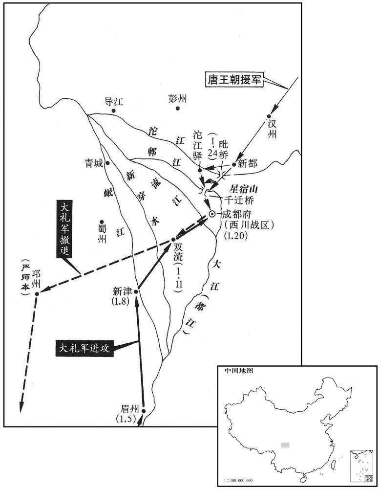
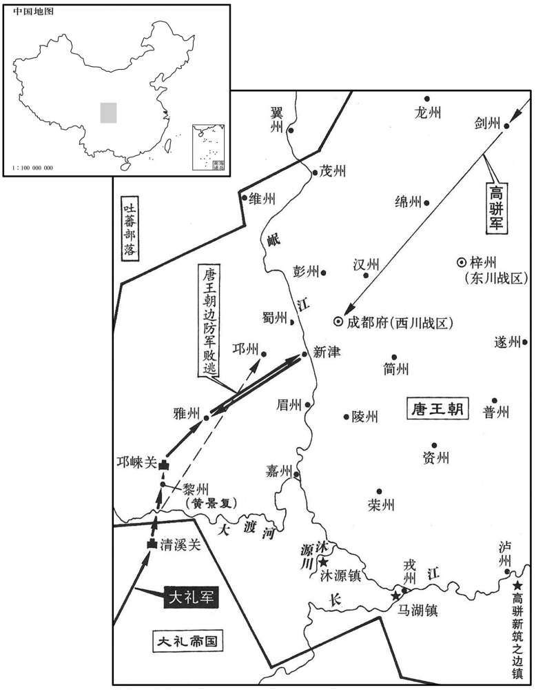
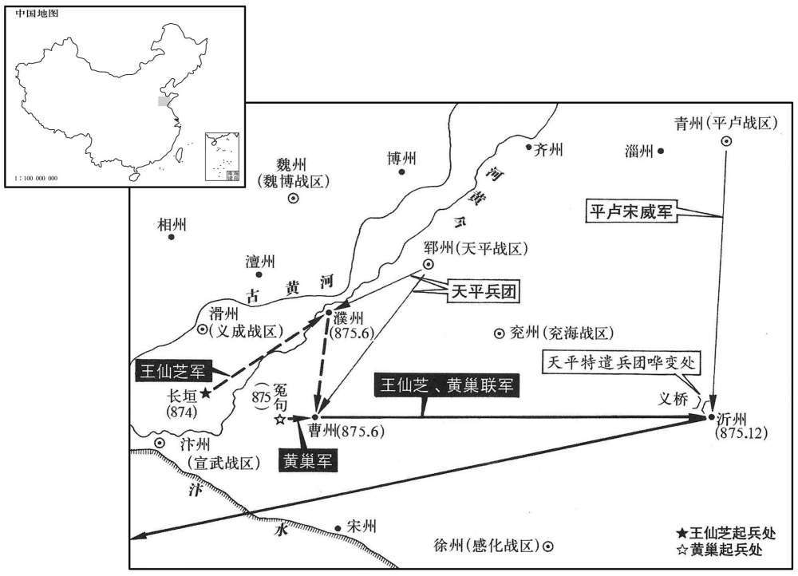
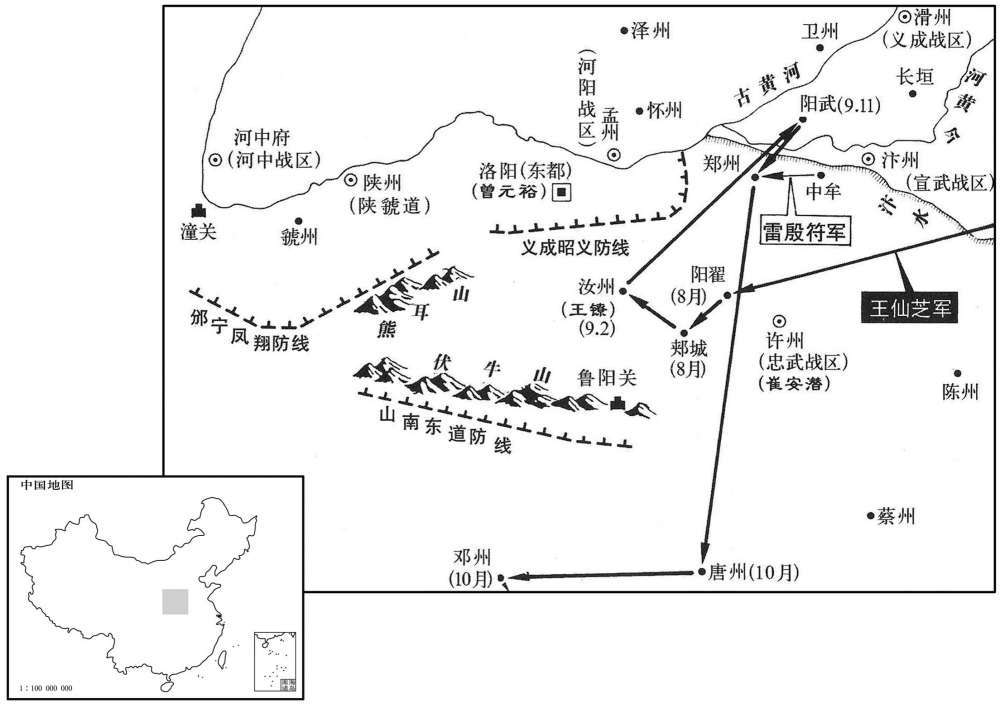
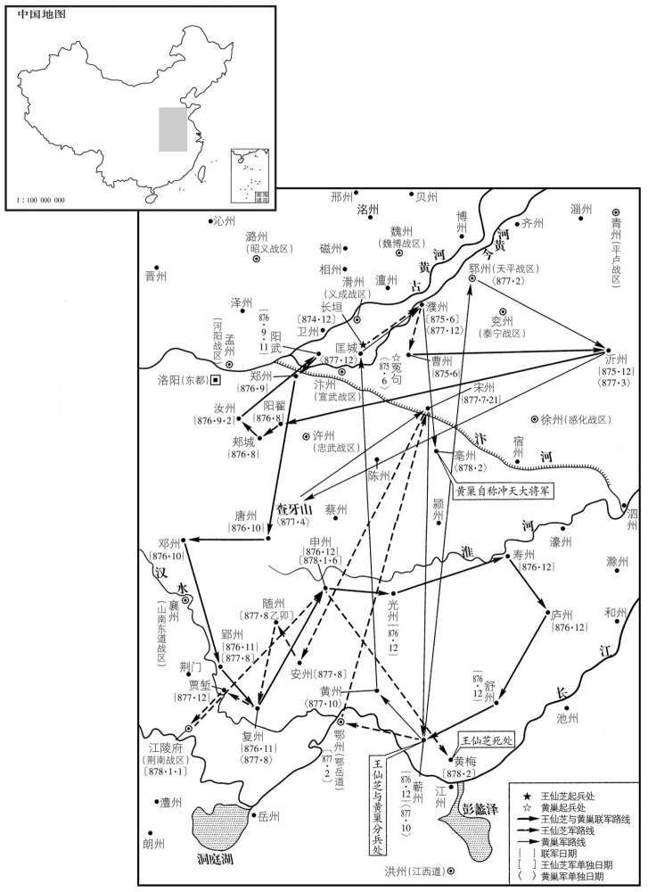

卷次与人物目录 / 卷252
资治通鉴 · 卷第二百五十二【唐纪六十八】
公元870年至公元876年 · 原文、白话与胡三省注
本页按胡注本编排保存全卷内容。白话采用本站所据译本，未可靠对应的内容另列说明；事件标题用于定位，并非原书文字。
本卷共142段原文，141段有译文对应，1段缺译或待核对。
卷第二百五十二【唐纪六十八】起上章摄提格（庚寅），尽柔兆涒滩（丙申），凡七年。
卷首原文与注释
懿宗昭圣恭惠孝皇帝下
公元870年 · 唐懿宗昭圣恭惠孝皇帝咸通十一年
咸通十一年〔（庚寅、八七〇）〕
上传原文的注释括号有异常，字符原样保留；无法可靠划分的段落默认全文显示。
本年事件索引（现代整理）
- 群臣上尊号，唐廷大赦
- 西川民闻南诏将至，逃入成都避难
- 卢耽与杨庆复整顿蜀军，选拔三千突将
- 南诏军至眉州，卢耽遣使议和
- 路岩、韦保衡弹劾康承训，康承训遭贬
- 南诏进至新津，留使者不遣并暂缓攻蜀
- 南诏攻陷双流，要求以王者礼仪议和
- 朝廷撤销定边军，七州复归西川
- 南诏兵临成都，援军受窦滂阻挠迟滞
- 南诏围攻成都，杨庆复率突将焚毁攻具
- 支详遣使与南诏议和，南诏暂时停攻
- 东蛮受边吏侵侮，转而附从南诏侵蜀
- 朝廷贬窦滂并命颜庆复统军，官军击退南诏
- 颜庆复夺宋威兵权，南诏退兵，围攻邛州未克
- 颜庆复教蜀人筑壅门城防御南诏
- 西川牙将因拒退南诏有功而授官
- 曹确出镇镇海
- 韦保衡拜相
- 庞勋余党在兖郓青齐间聚众为盗
- 吴行鲁任西川留后
- 光州民逐刺史李弱翁，朝臣请严惩
- 朝议徐州建制，复置观察使并将泗州划归淮南
- 张允伸加兼侍中
- 同昌公主薨，懿宗怒杀医官并捕系亲族
- 何全皞骄暴减军粮，魏博军乱而杀之
- 刘瞻出镇荆南，温璋死，刘瞻等遭韦保衡排挤贬逐
- 吴行鲁任西川节度使
- 王铎拜礼部尚书、同平章事
- 徐州复置感化军节度
- 王景崇加同平章事，李国昌出镇振武
春，正月，甲寅朔，群臣上尊号曰睿文英武明德至仁大圣广孝皇帝；赦天下。
春季，正月，甲寅朔（初一），唐朝群臣给皇帝李上尊号，称为睿文英武明德至仁大圣广孝皇帝；大赦天下。
西川之民闻蛮寇将至，争走入成都。时成都但有子城，亦无壕，人所占地〔占，之赡翻。〕各不过一席许，雨则戴箕盎以自庇；又乏水，取摩诃池泥汁，澄而饮之。〔成都记：摩诃池在张仪子城内。隋蜀王秀取土筑广子城，因为池。有胡僧见之曰：「摩诃宫毗罗。」盖胡僧谓「摩诃」为大，「宫毗罗」为龙，谓此池广大有龙耳。因名名摩诃池。或曰萧摩诃所开，非也。池今在成都县东南十二里。〕
西川人民听说南诏蛮军将要入侵，争相避难逃入成都，使城中人口爆满。当时成都只有内城，连护城壕也没有，每人平均所占不过一席之地，因无住房，下雨天只好戴斗笠和木盆以避雨淋。又缺乏饮水，只好取摩诃池泥汁，待沉淀见清后饮用。
将士不习武备，节度使卢耽召彭州刺史吴行鲁使摄参谋，与前泸州刺史杨庆复〔考异曰：新传云「泸州刺史杨庆」。锦里耆旧传云「嘉州」，误也。今从解围录。〕共修守备，选将校，分职事，〔将，即亮翻；下同。校，户教翻。〕立战棚，具炮檑，〔棚，蒲庚翻。炮，普教翻。檑，卢对翻，檑木也；自城上下之以压敌。〕造器备，严警逻。先是，西川将士多虚职名，亦无禀给。〔先，悉荐翻。〕至是，揭牓募骁勇之士，〔逻，郎佐翻。揭，丘杰翻。〕补以实职，厚给粮赐，应募者云集。庆复乃谕之曰：「汝曹皆军中子弟，年少材勇，〔少，诗照翻。〕平居无料自进，今蛮寇凭陵，乃汝曹取富贵之秋也，可不勉乎！」皆欢呼踊跃。于是列兵械于庭，使之各试所能，两两角胜，察其勇法而进退之，得选兵三千人，号曰「突将」。行鲁，彭州人也。
西川军队缺少训练，将士不习武备，节度使卢耽为此召彭州刺史吴行鲁充当参谋，与前泸州刺史杨庆复共同修复守备，选拔将校，分配守城职事。又搭起临时战棚，储存大量石炮和檑木，修造各种军用器械。并在城内设警备巡逻。先前，西川将士中很多是虚额职名，也没有固定的粮饷给养。至此开始揭榜公开招募，招徕骁勇之士以补充军队缺额，充实军官队伍，并厚给粮饷，因而应募的人很多。杨庆复教谕应募者说：“你们都是军人子弟，年轻有为，有智有勇，平时太平无事，没有施展才能的机会，而今南蛮入侵，欺凌百姓，这正是你们报效国家，获取功名富贵的时刻，与诸位共勉，切莫错失良机啊！”应募者听后都情绪高涨，欢呼雀跃。于是在大庭排列各式兵器，让应募者大央手，各试所能，并让他们两人一组进行角力，通过考察选用勇者，辞退怯者。于是选得精壮三千人。号称“突将”。吴行鲁是彭州人。
戊午，蛮至眉州，耽遣同节度副使王偃等赍书见其用事之臣杜元忠，与之约和。蛮报曰：「我辈行止，口系雅怀。」
戊午（初五），南诏军队进行至眉州，卢耽派遣同节度副使王偃等人带着书信往见蛮军掌握权柄的官员杜元忠，与其约和，杜元忠称：“我军的行止，一定尊重贵方”。
路岩、韦保衡上言：「康承训讨庞勋时，逗桡不进，〔上，时掌翻。逗，音豆。桡，奴教翻。〕又不能尽其余党，又贪虏获，不时上功。」〔上，时掌翻。〕辛酉，贬蜀王傅、分司；蜀王佶，皇子也。考异曰：新传曰：「宰相路岩、韦保衡劾承训讨贼逗桡，贪虏获，不时上功，贬蜀王傅、分司东都。」按此时保衡未为相，盖以尚主之故，上用其言，故得挤承训也。〕寻再贬恩州司马。
本段缺少可靠对应白话，原文完整保留；未使用生成译文。
南诏进军新津，〔新津，汉武阳县，后周改为新津，唐属蜀州。九域志。在州东南七十里。〕定边之北境也。卢耽遣同节度副使谭奉祀致书于杜元忠，问其所以来之意；蛮留之不还。院遣使告急于朝，〔朝，直遥翻。〕且请遣使与和，以纾一时之患。朝廷命知四方馆事、太仆卿支详为宣谕通和使。〔晏公类要曰：旧仪，于通事舍人中，以宿长一人总知馆事，谓之馆主，凡四方贡纳及章表皆受而进之。唐自中世以后，始以他官判四方馆事。〕蛮以耽待之恭，亦为之盘桓，〔为，于伪翻。〕而成都守备由是粗完。〔粗，坐五翻。〕
南诏进军新津，进入定边北境。唐西川节度使卢耽又遣同节度副使谭奉祀致书于杜元忠，质问南诏军来犯意图，杜元忠将谭奉祀扣留。卢耽于是遣使向朝廷告急，希望朝廷出面遣使与南诏王国请和，以缓解当前的边患。朝廷任命知四方馆事、太仆卿支详为宣谕通和使，赶赴成都。南诏军见卢耽待他们相当恭顺，也就稍事盘桓，进军速度放慢，而成都城内的守备由此得以大致完工。
甲子，蛮长驱而北，陷双流。〔双流，汉广都县地，隋置双流县，唐属成都府。九域志：在府南四十里。〕庚午，耽遣节度副使柳盘往见之，杜元忠授盘书一通，曰：「此通和之后，骠信与察府相见之仪也。」其仪以王者自处，〔处，昌吕翻。〕语极骄慢。又遣人负彩幕至城南，云欲张陈蜀王厅以居骠信。〔隋蜀王秀镇蜀，起听事，极为宏壮。厅，他经翻。〕
甲子（十一日），南诏军队长驱北进，攻陷双流。庚午（十七日），卢耽再遣节度副使柳入南诏军见其统帅，杜元忠授予柳一封书信，说“信中写有关于此次通和之后，我南诏骠信与贵节度使府相见的礼仪”，其言语极端骄横傲慢，而其信中所规定的礼仪，更是处处以王者自居。杜元忠甚至派人将彩色帷幕搬到成都城南，声称要在城内蜀王厅布置，以便南诏骠信居处。
癸酉，废定边军，复以七州归西川。〔七州，邛、眉、蜀、雅、嘉、黎、嶲也。〕
癸酉（二十日），唐废定边军，将其所领七州复归西川节度使管辖。
是日，蛮军抵成都城下。前一日，卢耽遣先锋游弈使王昼至汉州诇援军，且趣之。〔诇，翾正翻，又火迥翻。趣，读曰促。〕时兴元六千人、凤翔四千人已至汉州，会窦滂以忠武、义成、徐宿四千人自导江奔汉州、就援军以自存。丁丑，王昼以兴元、资、简兵三驯余人军于毗桥，〔毗桥，在汉州南界。〕遇蛮前锋，与战不利，退保汉州。时成都日望援军之至，而窦滂自以失地。〔谓失定边军也。〕欲西川相继陷没以分其责，每援军自北至，辄说之曰：「蛮众多于官军数十倍，官军远来疲弊，未易遽前。」〔说，式芮翻。易，以豉翻。〕诸将信之，皆狐疑不进。成都十将李自孝阴与蛮通，欲焚城东仓为内应，城中执而杀之。后数日，蛮果攻城，久之，城中无应而止。
这一天，南诏军队进抵成都城下，而前一天，卢耽已派遣先锋游奕使王昼往汉州催促援军。当时有兴元兵六千人、凤翔兵四千人已到达汉州，恰在此时窦滂也以忠武、义成、徐宿之兵四千人自导江来到汉州，与援军会合以自保。丁丑（二十四日），王昼率兴元、资州、简州之兵三千余人进军于毗桥，与南诏军前锋遭遇，王昼出战失利，退保汉州。当时成都军民日夜盼望援军的到来，而窦滂自以为所领定边军辖地尽失，希望西川也相继失陷，以便分担和减轻自己的罪责，因而每有援军自北而至，即往游说：“南蛮兵众多于官军数十倍，官军远道而来，疲惫不堪，最好不要贸然前进。”唐援军将领听后都狐疑不敢进。成都十将李自孝暗中与南诏军通款，企图焚城东仓为蛮军作内应，被城中军民察觉，而被逮捕处死。数天后，蛮军果然来攻城，等待许久，未得城中李自孝的接应而退兵。
二月，癸未朔，蛮合梯冲四面攻成都，城上以钩缳挽之使近，〔梯，云梯；冲，冲车也。缳，于善翻，屈转其索如环钩，施于其端。〕投火沃油焚之，攻者皆死。卢耽以杨庆复、摄左都押牙李骧各帅突将出战，〔帅，读曰率。〕杀伤蛮二千余人，会暮，焚其攻具三千余物而还。蜀人素怯，其突将新为庆复所奖拔，且利于厚赏，勇气自倍，其不得出者，皆愤郁求奋。后数日，贼取民篱，重沓湿而屈之，以为蓬，〔重，直龙翻。「蓬」，当作「篷」。编竹以覆舟曰篷。言湿篱而屈之，状如方之眠篷也。〕置人其下，举以抵城而斸之，〔斸，陟玉翻，斫也，掘也。〕矢石不能入，火不能然，〔然，与燃同，烧也。〕庆复镕铁汁以灌之，攻者又死。
二月，癸未朔（初一），南诏蛮军架云梯和冲车向成都城四面围攻，城上唐军用环钩套住云梯，向下浇滚烫的沸油，并投火焚烧，城下攻城的蛮军大都被烧死。卢耽命杨庆复和摄左都押牙李骧各率突将出城袭击，杀伤南诏蛮军二千余人，至日暮之时，焚南诏攻城器械三千余具，回到城中。蜀人一向懦怯，而“突将”却是最近选拔出来的勇士，加上给赏优厚，所以勇气百倍，未能出城作战的人，也个个求战请缨，深为自己未能出战而惋惜。几天之后，南诏军又取民间的篱笆，用水浇湿后编成竹篷，兵将在其下举着进抵城下，一时城上矢石不能入，火也不能燃烧。南诏军在竹篷掩护下挖掘城墙，杨庆复命唐军熔铁汁往下顷倒，结果城下蛮军全被烧死。
乙酉，支详遣使与蛮约和。丁亥，蛮敛兵请和。戊子，遗使迎支详。时颜庆复以援军将至，详谓蛮使曰：「受诏诣定边约和，今云南乃围成都，则与向日诏旨异矣。且朝廷所以和者，冀其不犯成都也。今矢石昼夜相交，何谓和乎！」蛮见和使不至，〔使，并疏吏翻。〕庚寅，复进攻城。〔复扶又翻。〕辛卯，城中出兵击之，乃退。
乙酉（初三），唐朝廷宣谕通和使支详遣使与南诏通和。丁亥（初五），南诏始收兵请和，戊子（初六），又派遣使者来迎接支详。当时颜庆复以为唐援军将赶到，支详因而未赴南诏军中，并对面诏的使者说：“我受诏到定边城约和，而你们却在围攻成都，这与我不久所受诏旨迥异。况且我朝廷所以约和，正是希望你们不要侵犯成都，而今昼夜矢石相交，怎么谈得上是请和呢?”南诏军见和使不到，庚寅（初八），复又攻城。辛卯（初九），城中出兵迎击，南诏军才退。
初，韦皋招南诏以破吐蕃，既而蛮诉以无甲弩，皋使匠教之，数岁，蛮中甲弩皆精利。又，东蛮苴那时、勿邓、梦冲三部助皋破吐蕃有功，〔事见二百三十三卷德宗兴元五年。〕其后边吏遇之无状，东蛮怨唐深，自附于南诏，每从南诏入寇，为之尽力，〔为，于伪翻。〕得唐人，皆虐杀之。
先前，韦皋招致南诏军队以进攻吐蕃，南诏军声称没有兵甲弓弩，韦皋于是派工匠往南诏教其制造，几年后，南诏所造兵甲弓弩都很精制锋利。另外，东蛮苴那时、勿邓、梦冲三部曾协助韦皋击破吐蕃军队，有功于唐朝，而后来唐朝的边境官吏却对他们敲诈勒索，引致东蛮怨恨唐朝，依附于南诏，经常随南诏军入侵唐朝边境，为南诏尽力，凡捕获唐人，都横加虐待并杀死。
朝廷贬窦滂为康州司户，以颜庆复为东川节度使，凡援蜀诸军，皆受庆复节制。癸巳，庆复至新都，〔九域志：新都县在成都府北四十五里。〕蛮分兵往拒之。甲午，与庆复遇，庆复大破蛮军，杀二千余人，蜀民数千人争操芟刀、白棓以助官军，〔操，七刀翻。芟刀，农家所以芟草。棓，蒲项翻。〕呼声震野。〔呼，火故翻。〕乙未，蛮步骑数万复至，〔复，扶又翻。〕会右武卫上将军宋威以忠武〔【章：十二行本「武」下有「军」字；乙十一行本同；孔本同。】〕二千人至，即与诸军会战，蛮军大败，死者五千余人，退保星宿山。〔宿，音秀。〕威进军沱江驿，〔沱江驿，在成都府新繁县。禹贡，岷山导江，别为沱。沱，徒河翻。〕距成都三十里。蛮遣其臣杨定保诣支详请和，详曰：「宜先解围退军。」定保还，蛮围城如故。城中不知援军之至，但见其数来请和，〔数，所角翻。〕知援军必胜矣。戊戌，蛮复请和，使者十返，城中亦依违答之。蛮以援军在近，攻城尤急，骠信以下亲立矢石之间。庚子，官军至城下与蛮战，夺其升迁桥，〔升迁桥，即升僊秦时李冰所起，旧名七星桥。〕是夕，蛮自烧攻具遁去，比明，官军乃觉之。〔比，必利翻，及也。〕
朝廷将窦滂贬为康州司户，任颜庆复为东川节度使，凡援蜀的诸路军队，全都受颜庆复节制。癸巳（十一日）颜庆复到达新都，南诏分兵往新都抗拒颜庆复。甲午（十二日），南诏军与颜庆复所统率的唐军相遇，颜庆复指挥唐军大破南诏蛮军，杀死二千多人，蜀中老百姓数千人也拿着刀和木棒争先恐后地赶来助战，呼喊声震动山野。乙未（十三日），南诏蛮军步骑数万人又来拒战，恰好唐右武卫上将军宋威率忠武军二千人赶到，与颜庆复指挥的诸路唐军会合，南诏蛮军被杀得大败，死者五千多人，蛮军退守星宿山，宋威率军进至沱江驿，距成都仅三十里。这时，南诏再遣使臣杨定保往支详处请秘，支详声言：“应先解成都围退军”。杨定保回到军中，南诏军仍然围城如故。成都城内并不知道唐援军已至，但见到南诏屦派使者来请和，推测援军必定胜利。戊戌（十六日），南诏又遣使者来成都请和，使者往返十来次，城中也不给予明确答复。南诏军见唐援军就在成都近边，攻城更加急迫，骠信以下军官都亲自立于矢石之间。庚子（十八日），唐官军赶到城下与蛮军接战，夺得南诏的升迁桥，至夜晚，南诏军烧毁其攻城器具而遁走，至第二天清晨，唐军才察觉南诏蛮军已离去。

初，朝廷使颜庆复救成都，命宋威屯绵、汉为后继。〔绵、汉，二州名。〕威乘胜先至城下，破蛮军功居多，庆复疾之。威饭士欲追蛮军，〔饭，扶晚翻。〕城中战士亦欲与北军合势俱进，庆复牒威，夺其军，勒归汉州。蛮至双流，阻新穿水，〔九域志：蜀州新津县有新穿镇。〕造桥未成，狼狈失度，〔失度者，失其常度也。〕三日，桥成，乃得过，断桥而去。〔断，丁管翻。〕甲兵服物遗弃于路，蜀人甚恨之。黎州刺史严师本收散卒数千保邛州，蛮围之，二日，不克，亦舍去。
起初，朝廷派颜庆复往救成都，而命宋威率军屯于绵州、汉州作后继。但宋威乘胜先至成都城下，破南诏蛮军所立战功最多，遭到颜庆复的妒嫉。南诏蛮军乘夜逃走后，宋威令士兵赶紧吃饭，企图追击蛮军，成都城中的战士也想与自北而来的唐军合势共同追击，颜复行文给宋威，收夺其兵权，令宋威归汉州据守。南诏蛮军退至双流，被新穿水阻挡，一时造桥不成，军队狼狈拥挤失去控制，三天后才造好桥，得以通过新穿水，其兵甲器物衣服很多都遗弃于路上。蜀中人士对颜庆复不准宋威追击蛮军的举动极为痛恨。黎州刺史严师本收集散卒数千人保据邛州，被南诏军围困，围攻两天不能克，南诏军也只得舍城而去。
颜庆复始教蜀人筑壅门城，〔城门之外，别筑垣墙以遮城门谓之壅门，今人谓之八卦墙者是也。〕穿堑引水满之，植鹿角，分营铺，〔斩木为鹿角，植之城外，以限冲突，今人谓之排杈者是。分立寨屋，谓之营，以居士卒。城上分立小屋，使守卒居之以候望，谓之铺。铺，普故翻。〕蛮知有备，自是不复犯成都矣。〔复，扶又翻。〕
颜庆复开始教蜀中士民筑壅门城，即于城门之外再筑垣墙以遮住城门，又挖壕堑并灌满水，在城外空旷之地插木杈为鹿角，在城上分立营寨，住守士卒。南诏知唐人已严加守备，自后不再进犯成都了。
先是，西川牙将有职无官，〔先，悉荐翻。〕及拒却南诏，四人以功授监察御史，〔此所谓官也。〕堂帖，人输堂例钱三百缗；贫者苦之。〔有功授官而微其输钱；史言唐之纪纲大坏。〕
先前，西川牙将虽有其职而无其官，及至击退南诏蛮军后，有四人以功授官为监察御史，按照政事堂的通知，每人要交堂例钱三百缗；家境贫苦的人深感忧虑。
三月，左仆射、同平章事曹确同平章事，充镇海节度使。
三月，左仆射、同平章事曹确以同平章事衔，充任镇海节度使。
夏，四月，丙午，以翰林学士承旨、兵部侍郎韦保衡同平章事。
夏季，四月，丙午（二十四日），任命翰林学士承旨、兵部待郎韦保衡为同平章事。
徐贼余党犹相聚闾里为群盗，散居兖、郓、青、齐之间，诏徐州观察使夏侯瞳招谕之。〔瞳，徒红翻。〕
徐州庞勋余党仍然相聚于乡闾为盗贼，散居于兖州、郓州、青州、齐州之间，诏命徐州观察使夏侯瞳对这群人进行招谕。
五月，丁丑，以邛州刺史吴行鲁为西川留后。
五月，丁丑（二十六日），任命邛州刺史吴行鲁为西川留后。
光州民逐刺史李弱翁，弱翁奔新息。〔新息，汉古县，唐属蔡州。九域志：在州东南一百五十五里，去光州九十里。〕左补阙杨堪等上言：「刺史不道，百姓负冤，当诉于朝廷，置诸典刑，岂得群党相聚，擅自斥逐，乱上下之分！此风殆不可长，〔分，扶问翻。长，知两翻。〕宜加严诛以惩来者。」
光州民众驱逐刺史李弱翁，出奔李弱翁新息。左补阙杨堪等向朝廷进言称：“刺史贪暴无道，使百姓冤狱遍地，应当及时上诉于朝廷，按朝廷刑典来进行处置，怎么可以民众群党相聚，擅自驱逐刺史，扰乱上下名份！决不能助长这种风气，应该严刑诛杀这些人，以使今后不再发生此类事情”。
上令百官议处置徐州之宜。〔处，昌吕翻。〕六月，丙午，太子少傅李胶等状，以为：「徐州虽屡构祸乱，〔谓银刀及桂州戍卒也。〕未必比屋顽凶；〔比，毗必翻。〕盖由统御失人，是至奸回乘衅。今使名虽降，〔谓降节度为观察。使，疏吏翻。〕兵额尚存，以为支郡则粮饷不给，分隶别藩则人心未服；或旧恶相济，更成披猖。惟泗州向因攻守，结衅已深，〔事见上卷九年、十年。〕宜有更张，庶为两便。」〔更，工衡翻。〕诏从之，徐州依旧为观察使，统徐、濠、宿三州，泗州为团练使，割隶淮南。
唐懿宗令朝廷百官议论如何处置徐州的党羽。六月，丙午（二十五），太子少傅李胶等给懿宗进状，认为“徐州虽然屡次发生祸乱，不见得所有的人都是凶顽，那是由于治民官不得其人，致使奸诈之人乘隙起事，今天虽然将节度使降为观察使，但兵额却仍然很多，将这些军队交由郡来管辖，郡又无法提供足够的粮饷，将其交由别的藩镇来管辖，军士们必定不服；或许和旧的怨恨搅在一起，造成更大的祸乱。徐州所领，只有泗州向来因为攻守，与其他州结怨已深，应该有所更改，使两者都能相安无事。”懿宗听从李胶的建议，诏命徐州依旧置观察使，统辖徐州、濠州、宿州三州，泗州置团练使，从徐州改隶于淮南。
加幽州节度使张允伸兼侍中。
朝廷加幽州节度使张允伸官，命他兼任侍中。
秋，八月，乙未，同昌公主薨。上痛悼不已，杀翰林医官韩宗劭等二十余人，悉收捕其亲族三百余人系京兆狱。中书侍郎、同、平章事刘赡名谏官使言之，谏官莫敢言者，乃自上言，〔上，时掌翻。〕以为：「修短之期，人之定分。昨公主有疾，深轸圣慈。宗劭等诊疗之时，〔诊，止忍翻，候脉也。疗，力照翻，治疾也。〕惟求疾愈，备施方术，非不尽心，而祸福难移，竟成差跌，〔跌，徒结翻。〕原其情状，亦可哀矜。而械系老幼三百余人，物议沸腾，道路蹉叹。奈何以达理知命之君，涉肆暴不明之谤！盖由安不虑危，忿不思难之故也。伏愿少回圣虑，宽释系者。」上览疏，不悦。赡又与京兆尹温璋力谏于上前；上大怒，叱出之。
秋季，八月，乙未（十五日），同昌公主病死。唐懿宗极为痛苦，悲伤不已，竟下令杀翰林院医官韩宗劭等二十余人，并将他们的亲族三百余人全部逮捕，关押在京兆监狱。中书侍郎同平章事刘瞻召请诸谏官，请他们上言劝谏，但谏官竟没有一人敢进谏，刘瞻只好自己上言，认为：“生命的长短，每个人都有定分。昨天公主患有疾病，受到陛下深深的慈爱，医官韩宗劭等为公主诊断治疗时，只是希望能将病治好，施展了多种医术和药方，不能说是不尽，但人的祸福难移，竟然不能妙手回春，各种医术未能奏效，当时医官们的情状，也是值得哀怜。但因此怪罪医官，用刑具收捕医官们的家属老幼三百余人，致使朝野议论纷纷，群情沸腾，道路上也常听到人的叹息声。知天命达人理的君主，何至于要遭到肆行暴虐不明事理的诽谤呢！大概是由于居安不忧虑危难，愤怒时不思常理的缘故吧。希望陛下能回心转意，宽大并释放这些无辜被捕人吧。”懿宗看到刘瞻疏文，很不高兴。刘瞻又与京兆尹温璋在朝堂当面力谏；唐懿宗勃然大怒，喝令刘瞻、温璋退出朝堂。
魏博节度使何全皞年少，骄暴好杀，〔少，诗照翻。好，呼到翻。〕又减将士衣粮。将士作乱，全皞单骑走，追杀之，〔何进滔得魏博，传三世，四十二年而灭。〕推大将韩君雄为留后。成德节度使王景崇为之请旌节；〔为之，于伪翻。〕九月，庚戌，以君雄为魏博留后。
魏博节度使何全年纪较轻，骄横残暴，动不动就杀人，又减扣将士的衣粮。其部下将士作乱，何全单骑逃走，被乱军追杀而死。魏博将士推大将韩君雄为留后。成德节度使王景崇向朝廷为韩君雄请求留后的旌旗节钺。九月，庚戌（初一）。朝廷命韩君雄为魏博留后。
丙辰，以刘瞻同平章事，充荆南节度使，贬温璋振州司马。璋叹曰：「生不逢时，死何足惜！」是夕，仰药卒。〔仰，牛向翻。〕敕〔【章：十二行本「敕」上有「庚申」二字；乙十一行本同；孔本同；退斋校同。】〕曰：「苟无蠹害，何至于斯！恶实贯盈，死有余责。宜令三日内且于城外权瘗，〔瘗，于计翻。〕俟轻恩宥，方许归葬，使中外快心，奸邪知惧。」己巳，贬右谏议大夫高湘、比部郎中知制诰杨知至、礼部郎中魏筜等于岭南，〔比，音毗。筜，都郎翻。〕皆坐与刘瞻亲善，为韦保衡所逐也。知至，汝士之子；〔汝士，虞卿从兄也，见二百四十一卷穆宗长庆元年。〕筜，扶之子也。〔魏扶见二百四十八卷宣宗大中三年。〕保衡又与路岩共奏刘赡，云与医官通谋，误投毒药；〔谮言误投毒药，以至同昌公主于死。然既言误矣，又安可以为通谋邪！〕丙子，贬瞻康州刺史。〔康州去京师五千七百五十里。〕翰林学士承旨郑畋草瞻罢相制辞曰：「安数亩之居，仍非己有；却四方之赂，惟畏人知。」岩谓畋曰：「侍郎乃表荐刘相也！」坐贬梧州刺史。〔梧州，汉苍梧邪所治广信县地，唐置梧州，去京师五千五百里。〕御史中孙鮖坐为瞻所引用，亦贬汀州刺史。〔鮖，户盲翻，又音皇。〕路岩素与刘瞻论议多不謟，瞻既贬康州，岩犹不快，阅十道图，以驩州去长安万里，再贬驩州司户，〔驩州，陆路至长安一万二千四百五十二里，水路一万七千里。考异曰：实录、新传皆云「岩志欲杀之，赖幽州节度使张公素表论瞻冤，乃止。」按是时张允伸镇幽州，云公素，恐误也。〕
丙辰，（初七），唐懿宗命刘瞻以同平章事衔，充当荆南节度使，贬温璋为振州司马。温璋叹息说：“生不逢时，死又保足惜”！这天晚上，饮药自杀而亡。唐懿宗为此下敕：“如果不是蠹害，何至于此！温璋实在是恶贯满盈，死有余辜，三天内暂且埋尸于城外，待有恩宥之时，方许归葬，使中外人心大快，奸邪之人知道畏惧。”己巳（二十日），贬右谏议大夫高湘、比部郎中知制诰杨知至、礼部郎中魏等人，皆流于岭南，这些人都是由于平时与刘瞻相亲善，因而遭到韦保衡的贬逐。杨知至是杨汝士的儿子、魏是魏扶的儿子。韦保衡又与路岩共同奏劾刘瞻，称刘瞻与翰林医官通谋，误投毒药，导致同昌公主死亡。丙子（二十七日），再贬刘瞻为康州刺史。翰林学士承旨郑畋起草罢免刘瞻宰相的制文，其中有“安居于数亩之地，却非自己所有；拒绝四方贿赂，也生怕有人知道。”路岩为此指责郑畋说：“这明明是表荐刘瞻宰相嘛！”郑畋竟因此被贬为梧州刺史。御史中丞孙因为是刘瞻所引荐重用，也被贬为汀州刺史。路岩平素与刘瞻论政事多不合，刘瞻被贬至康州，路岩仍觉得贬得不够远，而犹感不快，遍查《十道图》，找到州距长安有万里，于是再贬刘瞻为州司户。
冬，十月，癸卯，以西川留后吴行鲁为节度使。
冬季，十月，癸卯（二十五日），唐廷任命西川留后吴行鲁为西川节度使。
十一月，辛亥，以兵部尚书、盐铁转运使王铎为礼部尚书、同平章事。铎，起之兄子也。〔王起见二百四十一卷长庆元年。铎，起兄炎之子。〕
十一月，辛亥（初三），唐懿宗任命兵部尚书、盐铁转运使王铎为礼部尚书、同平章事。王铎是王起之兄王炎的儿子。
丁卯，复以徐州为感化军节度。〔徐州本武宁军，中有银刀之乱，罢节镇为观察，今复为感化军。〕
丁卯（十九日），朝廷复以徐州为感化军，置节度使。
十二月，加成德节度使王景崇同平章事。以左金吾上将军李国昌为振武节度使。
十二月，唐懿宗下令加成德节度使王景崇为同平章事。任命左金吾上将军李国昌为振武节度使。
译本中未与胡注本可靠对应的内容
以下另列供核对版本差异，不并入胡注本正文。
译本所附古文
[3]路岩、韦保衡上言：“康承训讨庞勋时，逗桡不进，又不能尽其余党，又贪虏获，不时上劝。”辛酉，贬蜀王傅、分司；寻再贬恩州司马。
译本白话
路岩、韦保衡向唐懿宗上言弹劾康承训说：“康承训征讨庞勋时，逗留不进，既不能剿尽庞勋余党，反而贪图虏获，动不动就上表请功。”辛酉（初八）朝廷贬康承训为蜀王傅，分司东都。不久，再贬为恩州司马。
公元871年 · 唐懿宗昭圣恭惠孝皇帝咸通十二年
十二年〔（辛卯、八七一）〕
春，正月，辛酉，葬文懿公主。〔同昌公主谥文懿。〕韦氏之人争取庭祭之灰，汰其金银。〔敕祭之于韦氏之庭，故曰庭祭。汰，淘也。〕凡服玩，每物皆百二十舆，以锦绣、珠玉为仪卫、明器，辉焕三十余里；〔记檀弓：孔子谓为明器者，知丧道矣，备物而不可用也。其曰明器，神明之也，何取于辉焕乎！〕赐酒百斛，饼餤四十橐驼，以饲体夫。〔餤，于廉翻，又徒甘翻。饲，祥吏翻。体，蒲本翻。体夫，轝柩之夫也。〕上与郭淑妃思公主不已，乐工李可及作叹百年曲，其声凄惋，〔叹百年曲，历叙人自少而壮，自壮而老，少时娟好，壮时追欢极乐，老时衰飒之状；其声凄切，感动人心。惋，乌贯翻。〕舞者数百人，。发内库杂宝为其首饰，以絁八百匹为地衣，舞罢，珠玑覆地。〔絁，式支翻。覆，敷救翻。〕
春季，正月，辛酉（十四日），为文懿公主下葬。在韦氏的家中设祭，韦氏家人争相拾取庭祭后的灰，淘出其中的金银。公主的服装玩具，每种都有一百二十车，送葬时用锦绣、珠玉为仪卫、明器，五彩缤纷的送葬队伍延绵三十余里。又赐酒一百多斛，装了四十骆驼的饼，以给抬柩的役夫食用。唐懿宗与郭淑妃追思公主不已，乐工李可及为此创作了《叹百年曲》，曲声切惋转，感动人心，舞女数百人配以舞蹈，懿宗又调发内库杂宝为舞女作首饰，用八百匹作地毯，一曲歌舞过后，地毯上尽是珠宝玑玉。
以魏博留后韩君雄为节度使。
朝廷正式任命魏博留后韩君雄为节度使。
门下侍郎、同平章事路岩与韦保衡素相表里，势倾天下。既而争权，浸有隙，保衡遂短岩于上。夏，四月，癸卯，以岩同平章事，充西川节度使。岩出城，路人以瓦砾掷之。〔砾，郎狄翻。〕权京兆尹薛能，岩所濯也，岩谓能曰：「临行，烦以瓦砾相饯！」能徐举笏对曰：「向来宰相出，府司无例发人防卫。」〔府司，谓京兆府所司。〕岩甚惭。能，汾州人也。〔能，音囊来切。〕
门下侍郎、同平章事路岩与韦保衡相互勾结，互为表里，权势倾于天下。但不久两人互相争权，渐渐有了隔阂。韦保衡于是在唐懿宗面前揭路岩的短，并进行诋毁。夏季，四月癸卯（初七），唐懿宗命路岩挂同平章事衔，充任西川节度使，贬出京城。路岩出长安城时，街道上的百姓用瓦砾向他掷去。当时暂任京兆尹的薛能是路岩所提拔，路岩于是向薛能打招呼，说；“我临行时，恐怕要受到瓦砾的饯行”！薛能慢吞吞地举起笏回答说：“向来宰相出城，京兆府司没有派兵防卫的惯例。”路岩听后惭愧极了。薛能是汾州人。
五月，上幸安国寺，赐僧重谦、僧澈沈檀讲座二，各高二丈。〔以沈香、檀香为讲座也。沈，持林翻。高，古号翻。〕设万人斋。
五月，唐懿宗来安国寺，赐予佛僧重谦、僧澈两个用沉香、檀香木制作的讲座椅子，每个都有二丈高。又设万人斋戒。
秋，七月，以兵部尚书卢耽同平章事，充山南东道节度使。
秋季，七月，唐懿宗任命兵部尚书卢耽挂同平章事衔，充任山南东道节度使。
冬，十月，以兵部侍郎、盐铁转运使刘邺为礼部尚书、同平章事。
冬季，十月，唐懿宗任命兵部侍郎、盐铁转运使刘邺为礼部尚书、同平章事。
公元872年 · 唐懿宗昭圣恭惠孝皇帝咸通十三年
十三年〔（壬辰、八七二）〕
本年事件索引（现代整理）
春，正月，幽州节度使张允伸得风疾，请委军政就医；许之，以其子简会知留后。疾甚，遣使上表纳旌节；丙申，薨。允伸镇幽州二十三年，〔宣宗大中四年，张允伸代周綝镇幽州。〕勤俭恭谨，边鄙无警，上下安之。
春季，正月，唐幽州节度使张允伸患中风病，向朝廷请求将幽州镇军政事务委交他人，自己就医治疗，得到朝廷的准许，于是以张允伸之子张简会为幽州留后。不久疾病转重，张允伸又派遣使者上表朝廷请交还节度使旌旗节钺，丙申（二十五日），因病不治而死。张允伸坐镇幽州二十三年，勤于军政事务，处事恭谨小心，使边境没有出现过危机，军民上下和睦相处，安居乐业。
二月，丁巳，以兵部侍郎、同平章事于琮为山南东道节度使，以刑部侍郎、判户部奉天赵隐为户部侍郎、同平章事。
二月，丁巳（初五）唐懿宗任命兵部侍郎、同平章事于琮出朝为山南东道节度使；任命刑部侍郎、判户部奉天人赵隐为户部侍郎、同平章事。
平州刺史张公素，素有威望，为幽人所服。张允伸薨，公素帅州兵来奔部丧。〔帅，读曰率。〕张简会惧，三月，奔京师，以为诸卫将军。〔泛言诸卫将军，不言何卫，史略之也。〕
唐平州刺史张公素，平时很有威望，为幽州人所信服。张允伸死后，张公素率领平州兵为幽州奔丧。张简会害怕张公素将不利于己，三月，投奔京城，被朝廷任命为诸卫将军之一。
夏，四月，立皇子保为吉王，杰为寿王，倚为睦王。
夏季，四月，唐懿宗立皇子李保为吉王，李杰为寿王，李倚为睦王。
以张公素为平卢留后。〔「平卢」，当作「卢龙」。〕
朝廷任命张公素为卢龙留后。
五月，国子司业韦殷裕诣合门告郭淑妃弟内作坊使惊述阴事；〔内作坊使，内诸司使之一，掌造内库军器。〕上大怒，杖杀殷裕，籍没其家。〔考异曰：续宝运录曰：「内作使郭敬述与宰臣韦保衡、张能顺频于内宅饮酒，潜通郭妃，荒秽颇甚。每封进文书于金合内，诈称果子，内连郭妃、郭敬述，外结张能顺、国子司业韦殷裕，拟倾皇祚，别立太子，事泄，遽加贬降。五月十四日，内牓子，贬工部尚书严祈郴州刺史，给事�之爚頞啈{刺史，给事中张铎滕州刺史，左金吾大将军李敬仲儋州司户。国子司业韦殷裕，敕京兆府决痛杖一顿，处死，家资、妻女没官。又贬叙州刺史韦君卿爱州崇平县尉，右仆射、右羽林统军张直方康州司马。续又贬驸马于琮并扶会与韦保衡等同谋不轨事，其月十七日，又贬尚书左丞李当道州刺史，吏部侍郎王讽建州刺史，左常侍李都贺州刺史，翰林承旨张裼封州司马，中书舍人封彦卿潮州司户，谏议大夫杨塾新州司户。驸马韦保衡雷州刺史，又贬儋州澄迈县尉，又贬驩州长流百姓，又赐自尽，家赀没官，仍三族不许朝廷录用。」其语杂乱无稽。今从实录。〕乙亥，合门使田献铦夺紫，改桥陵使，〔铦，思廉翻。〕以其受殷裕状故也。殷裕妻父太府〔【章：十二行本「府」作仆」；乙十一行本同。】〕少卿崔元应、妻从兄中书舍人崔沆、〔从，才用翻。沆，下党翻。〕季父君卿皆贬岭南官；给事中杜裔休坐与殷裕善，亦贬端州司户。沆，铉之子也。〔崔铉见二百四十七卷武宗会昌三年。〕裔休，悰之子也。
五月，国子司业韦殷裕来到禁内阁门，告发郭淑妃之弟内作坊使郭敬述所作许多见不得人的事。唐懿宗勃然大怒，将殷裕杖杀，并籍没其家产。乙亥（初六），阁门使田献被剥夺穿紫衣的权利，改任桥陵使，他所以降职是因为接受韦裕所上的诉状。韦殷裕的岳父太府少卿崔元应、韦殷裕妻子的堂兄中书舍人崔沆、叔父韦君卿也都受到牵连，贬往岭南。给事中杜裔休因为与韦殷裕友善，也被贬为端州司户。崔沆是崔铉的儿子。杜裔休是杜的儿子。
丙子，贬山南东道节度使于琮为普王傅、分司，〔普王俨，皇子也，后践阼，是为僖宗。〕韦保衡谮之也。辛巳，贬尚书左丞李当、吏部侍郎王沨、〔沨，房戎翻。〕左散骑常侍李都、翰林学士承旨兵部侍郎张裼、〔裼，他计翻，又先击翻。〕前中书舍人封彦卿、左谏议大夫杨塾，癸未，贬工部尚书严祁、给事中李贶、给事中张铎、左金吾大将军李敬仲、起居舍人萧遘、李渎、郑彦特、李藻，皆处之湖、岭之南，〔处，昌吕翻。不详言各人所贬之地，以其无罪，故略之也。〕坐与琮厚善故也。贶，汉之子；遘，寘之子也。〔李汉见二百四十五卷文宗大和九年。萧寘见二百五十卷五年。〕甲申，贬前平卢节度使于琄为凉王府长史、分司，〔琄，胡犬翻。凉王侹，皇子也。〕前湖南观察使于为袁州刺史。緕、琄，皆琮之兄也。寻再贬琮韶州刺史。〔隋于曲江县置韶州，以县北八十里韶石为名，至京师四千九百三十二里。〕
丙子（初七），唐懿宗下令贬山南东道节度使于琮为普王李俨的师傅、分司东都。这也是由于韦保衡的诋毁。辛巳（十二日），朝廷又贬尚书左丞李当、吏部侍郎王、左散骑常侍李都、翰林学士承旨兵部侍郎张裼、前中书舍人封彦卿、左谏议大夫杨塾等人的官，癸未（十四日），再贬工部尚书严祁、给事中李贶、给事中张铎、左金吾大将军李敬仲、起居舍人萧遘、李渎、郑彦特、李藻等人的官，全都流放湖南、岭南，而遭贬的原因，也都是平素与于琮相友善。李贶是李汉的儿子；萧遘是萧的儿子。甲申（十五日），贬前平卢节度使于为凉王府长史、分司东都，贬前湖南观察使于为袁州刺史。于、于都是于琮之兄。不久，再贬于琮为韶州刺史。
琮妻广德公主，上之妹也，〔广德县，属宣州。〕与琮偕之韶州，行则肩舆门相对，坐则执琮之带，琮由是获全。时诸公主多骄纵，惟广德动遵法度，事于氏宗亲尊卑无不如礼，内外称之。
于琮的妻子广德公主是唐懿宗的妹妹，与于琮一同往韶州，行时与于琮的轿子门相对，坐时牵着于琮的衣带，所以于琮得以保全性命。当时唐诸位公主大多骄慢放纵，只有广德公主举动遵守法度，对于氏一家宗亲无论尊卑均待之以礼，受到内外人士的称道。
六月，以卢龙留后张公素为节度使。
六月，朝廷任命卢龙留后张公素为节度使。
韦保衡欲以其党裴条为郎官，惮左丞李璋方严，恐其不放上，〔尚书左、右丞，分总六曹、二十四司，郎官，凡除授非其人，左右丞得以纠劾之，不令赴省供职。上，时掌翻。〕先遣人达意。璋曰：「朝廷迁除，不应见问。」秋，七月，乙未，以璋为宣歙观察使。〔歙，书涉翻。〕
韦保衡企图用自己的党羽裴条为郎官，怕尚书左丞李璋太严厉，不同意裴条赴省供职，于是事先派人向李璋打招呼。李璋回答说：“朝廷官员的升迁，是不应该来问的。”秋季，七月，乙未（二十七日），李璋被贬出朝，任宣歙观察使。
八月，归义节度使张义潮薨，沙州长史曹义金代领军府；制以义金为归义节度使。是后中原多故，朝命不及，回鹘陷甘州，自余诸州隶归义者多为羌、胡所据。〔自唐末迄于宋朝，河、湟之地遂悉为戎，中国不能复取。朝，直遥翻。〕
八月，唐归义军节度使张义潮去世，沙州长史曹义金代张义潮领掌军府。懿宗下诏，任曹义金为归义军节度使。自此以后，中原地区变故很多，朝廷的命令不能及时传达至边远，于是甘州沦陷于回鹘之手，归义军所隶其余诸州也多被羌人、胡族所占据。
冬，十二月，追上宣宗谥曰元圣至明成武献文睿智章仁神聪懿道大孝皇帝。〔上，时当翻。〕
冬季，十二月，唐懿宗令朝臣追上唐宣宗谥号为元圣至明成武献文睿智章仁神聪懿道大孝皇帝。
振武节度使李国昌，恃功恣横，〔横，户孟翻。〕专杀长吏。〔长，知丈翻。〕朝廷不能平，徒国昌为大同军防御使，国昌称疾不赴。〔史言沙陀跋扈，不待杀段文楚而后动于恶。〕
唐振武节度使李国昌自恃有功，骄横恣肆，专杀朝廷任命的官吏。朝廷对此极表不满，于是将李国昌调换为大同军防御使，李国昌抗拒朝令，竟假称有病而不赴大同。
公元873年 · 唐懿宗昭圣恭惠孝皇帝咸通十四年
十四年〔（癸巳、八七三）〕
上传原文的注释括号有异常，字符原样保留；无法可靠划分的段落默认全文显示。
本年事件索引（现代整理）
春，三月，癸巳，上遣敕使法门寺迎佛骨，群臣谏者甚众，至有言宪宗迎佛骨寻晏驾者。〔事见宪宗纪元和十四年。死者，人所甚讳也，况言之于人主之前乎！言之至此，人所难也。〕上曰：「朕生得见之，死亦无恨！」广造浮图、宝帐、香轝、幡花、幢盖以迎之，〔幡，孚袁翻。幢，传江翻。史照曰：幢，童也，其状童童然。〕皆饰以金玉、锦锈、珠翠。自京城至寺三百里间，道路车马，昼夜不绝。夏，四月，壬寅，佛骨至京师，导以禁军兵仗、公私音乐，沸天烛地，绵亘数十里；仪卫之盛，过于郊祀，元和之时不及远矣。富室夹道为彩楼及无遮会，竞为侈靡。上御安福门，降楼膜拜，〔膜拜，胡礼拜也。膜，莫乎翻。〕流涕沾臆，赐僧及京城耆老尝见元和事者金帛。迎佛骨入禁中，三日，出置安国崇化寺。宰相已下竞施金帛，不可胜纪。〔施，式豉翻。胜，音升。〕因下德音，降中外系囚。
春季，三月，癸巳（二十九日），唐懿宗派遣宦官使者往法门寺迎佛骨，满朝大臣有许多人出来劝谏，有的人甚至说唐宪宗迎佛骨不久便崩驾。唐懿宗说：“朕在世时能见到佛骨，死了也无遗恨！”于是大量建造佛塔、宝帐、香、幡花、幢盖，并且都以金玉、锦绣、珠翠修饰，准备迎接佛骨。自京城长安至法门寺之间有三百里，道路上的车马昼夜不绝。夏季，四月，壬寅（初八），佛骨被运到京城，迎接队伍以禁军兵仗为前导，公家和私人的音乐之声响成一片，欢迎的人群铺天盖地，绵延数十里。盛大的仪卫，较郊祀有过之而无不及，空前的盛况远超过了元和之时。长安富室在道路两旁结彩楼，并举办赦免诸恶的无遮会，竞相靡费奢侈。唐懿宗登上安福门，从楼上走下，向佛骨顶礼膜拜，激动得连眼泪都流了下来。于是赐予佛教僧侣及长安城中年高望重并曾亲眼见过元和年间迎佛骨的人金子和玉帛。唐懿宗将佛骨迎入禁宫，三天后又将佛骨运出，放置于安国崇化寺。宰相以下百官大臣又竞相施舍金、帛等物，其数无法胜记。为此唐懿宗发布德音，关押在狱囚犯酌量减刑。
五月，丁亥，以西川节度使路岩兼中书令。〔考异曰：锦里耆旧传：「十二年八月，路公用边咸、郭等策，奏于邛州置定边军节度使，复制扼大渡河，修邛崃关南路，米点檀丁子弟，教之斫刺刀，补义军将，主管教练兵士。」新传：「岩至西川，承蛮盗边后，岩力拊循，置定边军于邛州，扼大渡，治故关，取檀丁子弟教击刺，补屯籍，由是西山八国来朝；以劳，迁兼中书令。」按置定边军乃李师望。耆旧传、新传皆误也。〕
五月，丁亥（二十四日），唐懿宗命西川节度使路岩兼任中书令。
南诏寇西川，又寇黔南，黔中经略使秦匡谋兵少不敌，弃城奔荆南；〔黔，渠今翻。少，诗沼翻。〕荆南节度使杜悰囚而奏之。六月，乙未，敕斩匡谋，籍没其家赀，亲族应缘坐者，令有司搜捕以闻。匡谋，凤翔人也。
南诏派军队侵犯西川，又侵犯黔南，唐经略使秦匡谋因兵少不能抵御，弃黔中城逃奔荆南；荆南节度使杜将秦匡谋囚禁并奏告朝廷。六月，乙未（初二），唐懿宗下令将秦匡谋斩首，并籍没其家产，其亲属家族因秦匡谋罪连坐在逃的人员，则命官府进行搜捕并上告朝廷。秦匡谋是凤翔人。
以中书侍郎、同平章事王铎同平章事，充宣武节度使。时韦保衡挟恩弄权，以刘瞻、于琮先在相位，不礼于己，谮而逐之。王铎，保衡及第时主文也，〔唐礼部校文主司谓之主文。〕萧遘，同年进士也，二人素薄保衡之为人，保衡皆摈斥之。〔考异曰：旧传曰：「保衡以杨收、路岩在中书，不加礼接，媒孽逐之。」按收获罪时，保衡未为相。盖保衡虽为学士，懿宗宠任之，故能谮收也。又曰：「公主薨，自后恩礼渐薄。」按路岩、于琮、王铎、萧遘被摈，皆在公主薨后。今从实录。〕
朝廷任命中书侍郎、同平章事王铎为同平章事，充任宣武节度使。当时韦保衡仗恃着唐懿宗对他的恩宠专政弄权，由于刘瞻、于琮在他之先居宰相位，对自己不够恭敬，因此在唐懿宗面前进行谮毁，以致被贬逐远外。王铎是韦保衡科举考试及第时的礼部校文主司，萧遘与韦保衡是同年进士，二人一贯鄙薄韦保衡的为人，为此韦保衡又将二人都摈斥排挤。
秋，七月，戊寅，上疾大渐，左军中尉刘行深、右军中辱韩文约立少子普王俨。〔考异曰：范质五代通录：「梁李振谓陕州护军韩彝范曰：『懿皇初升遐，韩中尉杀长立幼以利其权，遂乱天下。今将军复欲尔邪！』彝范，即文约孙也。」按懿宗八子，僖宗第五，余子新、旧书不载长功，又不言所终，不言所杀者果何王也。〕庚辰，制：「立俨为皇太子，：「考异曰：续宝运录曰：「其日，宰臣萧邺等直至寝幄问疾，上微道『朕』三字而止，群臣不觉号哭失声，中外悉皆垂泣。」按是时宰相韦保衡最在上，萧邺不为相。今不取。〕权句当军国政事。」〔句，古候翻。当，丁浪翻。〕辛巳，上崩于咸宁殿，〔年四十一。〕遗诏以韦保衡摄冢宰。僖宗即位。八月，丁未，追尊母王贵妃为皇太后，刘行深、韩文约皆封国公。
两版字句有差异，建议核对原文。
秋季，七月，戊寅（十六日），唐懿宗得病转危，神策军左军中尉刘行深、右军中尉韩文约立懿宗最小的儿子普王李俨嗣位。庚辰（十八日）诏“立李俨为皇太子，暂时掌管军国政事。”辛巳（十九日），懿宗于咸宁殿驾崩，立下遗诏以韦保衡摄冢宰。当天唐僖宗李俨即皇帝位。八月，丁未（十五日），唐僖宗追尊其生母王贵妃为皇太后，刘行深、韩文约皆被封为国公。
关东，河南大水。
关东、河南地区发生大水灾。
九月，有司上先太后谥曰惠安。〔先太后，谓上母王贵妃也。上，时掌翻。〕
九月，有关官府给已去世的皇太后王氏上谥号，称惠安太后。
司徒、门下侍郎、同平章事韦保衡，怨家告其阴事，贬保衡贺州刺史。
司徒、门下侍郎、同平章事韦保衡因冤家告发他的阴私、被贬为贺州刺史。
乐工李可及流岭南。可及有宠于懿宗，尝为子娶妇，〔为，于伪翻。〕懿宗赐之酒二银壶，启之无酒而中实。右军中尉西门季玄屡以为言，懿宗不听。可及尝大受赐物，载以官车；季玄谓曰：「汝他日破家，此物复应以官车载还；非为受赐，徒烦牛足耳！」及流岭南，籍没其家，果如季玄言。〔史言小人宠过而祸及。〕
乐工李可及被流放到岭南。李可及得到唐懿宗的宠爱，其儿子娶媳妇时，唐懿宗曾赐给两个银酒壶，打开酒壶盖，无酒而壶却是实的。神策军右军中尉西门季玄屡次向唐懿宗劝说不宜对李可及优宠太过，懿宗不听。李可及曾经受到唐懿宗大量的财物赏赐，用官府的车子运载回私宅。西门季玄对人说：“李可及今后必定破家，这些财物必定还会用官府的车子运还。倒不可惜赐给他这么多财物，而是徒然耗费了拉车的牛的足力罢了！”待到李可及被流放到岭南，籍没其家中一切财产，果然如西门季玄先前所预言的那样。
以西川节度使路岩兼侍中，加成德节度使王景崇中书令，魏博节度使韩君雄、卢龙节度使张公素、天平节度使高骈并同平章事。君雄仍赐名允中。〔考异曰：旧传作「允忠」。实录、新传皆作「允中」。今从之。〕
唐僖宗命西川节度使路岩兼任侍中，加给成德节度使王景崇中书令的官号，并加给魏博节度使韩君雄、卢龙节度使张公素、天平节度使高骈等人同平章事的官号，均为使相。又赐韩君雄名为韩允中。
冬，十月，乙未，以左仆射萧仿为门下侍郎、同平章事。
冬季，十月，乙未（初四），任命左仆射萧为门下侍郎、同平章事。
韦保衡再贬崖州澄迈令，〔澄迈，隋县，唐属琼州。九域志：在州西五十五里。〕寻赐自尽。又贬其弟翰林学士、兵部侍郎保乂为宾州司户，所亲翰林学士、户部侍郎刘承雍为涪州司马。〔涪，音浮。〕承雍，禹锡之子也。〔刘禹锡见二百三十六卷顺宗永贞元年。〕
再贬韦保衡为崖州澄迈县令，不久又赐韦保衡自尽。又贬韦保衡之弟翰林学士、兵部侍郎韦保义为宾州司户，韦保衡的亲信翰林学士、户部侍郎刘承雍被贬为涪州司马。刘承雍是刘禹锡的儿子。
癸卯，赦天下。
癸卯（十二日），宣告大赦天下囚徒。
西川节度使路岩，喜声色游宴，〔喜，许记翻。〕委军府政事于亲吏边咸、郭筹，皆先行后申，上下畏之。尝大阅，二人议事，默书纸相示而焚之，军中以为有异图，惊惧不安。朝廷闻之，十一月，戊辰，徒岩荆南节度使。感、筹潜知其故，遂亡命。
唐西川节度使路岩喜好声色，游宴无度，将节度使军府的政事委托给其所亲信的官吏边咸、郭筹等人，边咸、郭筹处置军政事务时都是先自行其事，然后才申报路岩，上下官吏对二人十分畏惧。有一次军府议事，边咸与郭筹二人不说话，却互相在纸条上写字，传阅后烧毁，军府官兵疑惑不解，以为二人密谋有异图，都惊恐不安。朝廷得之这些情况后，于十一月戊辰（初七），将路岩调任为荆南节度使。边咸、郭筹私下里也得知路岩改官的原因，于是赶忙逃走。
以右仆射萧邺同平章事，充河东节度使。
唐僖宗任命右仆射萧邺为同平章事，出任河东节度使。
十二月，己亥，诏送佛骨还法门寺。
十二月，己亥（初八），唐僖宗下诏将佛骨送还法门寺。
再贬路岩为新州刺史。
朝廷再将路岩贬为新州刺史。
原书衔接
僖宗惠圣恭定孝皇帝上之上〔初名俨，改名儇，懿宗第五子。〕
公元874年 · 唐僖宗惠圣恭定孝皇帝干符元年
干符元年〔（甲午、八七四）是年十一月方改元。〕
上传原文的注释括号有异常，字符原样保留；无法可靠划分的段落默认全文显示。
本年事件索引（现代整理）
春，正月，丁亥，翰林学士卢携上言，〔上，时掌翻。〕以为：「陛下初临大宝，宜深念黎元。国家之有百姓，如草木之有根柢，〔柢，典礼翻，又丁计翻。〕若秋冬培溉，则春夏滋荣。臣窃见关东去年旱灾，自虢至海，〔自虢州东至于海也。〕麦纔半收，秋稼几无，冬菜至少，贫者硙蓬实为面，蓄槐叶为齑；或更衰羸，亦难收〔【章：十二行本「收」作「采」，；乙十一行本同；退斋校同。】〕拾。〔几，居依翻。少，诗沼翻。硙，五对翻，也。面，眠见翻。齑，笺西翻。羸，伦为翻。〕常年不稔，则散之邻境；〔之，往也。〕今所在皆饥，无所依投，坐守乡闾，待尽沟壑。其蠲免余税，实无可征；而州县以有上供及三司钱，〔户部、转运、盐铁为三司。〕督趣甚急，〔趣，读曰促。〕动加捶挞，虽撤屋伐木，雇妻鬻子，止可供所由酒食之费，〔所由，谓催督租税之吏卒。〕未得至于府库也。或租税之外，更有他傜；朝廷傥不抚存，百姓实无生计。乞敕州县，应所欠残税，并一切停征，以俟蚕麦；仍发所在义仓，亟加赈给。〔太宗置义仓及常平仓以备凶荒，高宗以后，稍假义仓以给他费，至神龙中略尽。玄宗即位复置之，安、史之乱复废。至文宗大和九年，以天下回残钱置常平义仓本钱，岁增市之以备赈给。〕至深春之后，有菜叶木牙，继以桑椹，渐有可食；在今数月之间，尤为窘急，行之不可稽援。」敕从其言，而有司竟不能行，徒为空文而已。
春季，正月，丁亥（二十七日），翰林学士卢携向唐僖宗上言，认为：“陛下刚刚登临皇帝宝座，应该多关心百姓的生活。国家有百姓，就象草木有根柢一样。如果秋天和冬天着力培育和灌溉，春天和夏天就能滋长繁茂。我在关东地区看到了去年的旱灾，自虢州东至大海的广大地方，小麦仅仅只有一半收成，秋季的庄稼几乎没有，冬季的蔬菜就更少了。百姓贫苦之家只好将草籽捣碎当面粉，将槐树叶子收藏起来当菜。有些老弱病残的百姓，连草籽、槐叶也无力采集。以往没有收成的年头，老百姓就逃散到相邻的州县，而现在到处都是饥荒，连一处投靠的地方都没有，只好坐守在本乡本土，待饿死后就抛尸至沟壑，悲惨极了。说是免除灾区的余税，实际上是无税可征，但州、县官吏因为有上供的税钱以及户部、转运、盐铁三司钱要向朝廷交纳，仍然急迫地督促百姓交粮交款，动不动就捶打鞭挞无法交齐税款的百姓。一般民户虽然拆除自己的房屋，砍倒门前的树木加以变卖，甚至卖儿卖女，卖妻室，所得的钱也只可供催督租税的吏卒的酒食费用，一文钱也到不了官府的仓库。有时租税之外，还有其他各类徭役。百姓已苦到了极处，朝廷如果还不加以救抚，老百姓们就没有活路了。希望陛下开恩，下令各州、县官吏，停征一切还没有收上来的租税，待到蚕丝和小麦都有收获时再说。并且将各地的义仓打开，迅速赈给饥饿无粮的百姓，一直到春暖花开之时，树木发芽菜长叶，桑树长出了桑椹，百姓有充饥的食物之时，才能停止义仓的赈给。在目前几个月之间，饥馑尤其危急，赈救行动的推行切不可有迟疑稽缓。”唐僖宗对卢携的上言和建议表示同意，即下诏按卢携所说的办，但官府最后不能推行，僖宗的诏令徒具一纸空文而已。
路岩行至江陵，敕削官爵，长流儋州。〔儋，都甘翻。〕岩美姿仪，囚于江陵狱再宿，须发皆白。寻赐自尽，籍没其家。岩之为相也，密奏，「三品以上赐死，皆令使者剔取结喉三寸以进，〔结喉，喉咙上下相接之处。〕验其必死。」至是，自罹其祸，所死之处乃杨赐死之榻也。〔史言天之报应不爽。杨收赐死见上卷咸通十年。〕边咸、郭筹捕得，皆伏诛。
路岩行至江陵，又得到唐僖宗敕令，削去一切官爵，长流于儋州。路岩仪表堂堂，被囚禁于江陵监狱中住宿，一夜之间胡须和头发全部白了。不久，唐僖宗又赐路岩自尽，并籍没其家产。路岩在唐懿宗朝任宰相时，曾密奏说：“凡三品以上的大官赐死，都应让使者将死者结喉三寸处喉骨剔下，交给有关衙门，以验正死者已必死无疑。”到如今，自己也遭杀身之祸。处死路岩正是在先时杨收赐死时所睡的床上。另外，边咸、郭筹也被捕获，也都被处死。
初，岩佐崔铉于淮南，为支使，〔唐制，节度使幕属有掌书记；观察有支使，以掌表笺书翰，亦书记之任也。〕铉知其必贵，曰：「路十终须作彼一官。」〔岩，第十。作彼一官，谓作相也。〕既而入为监察御史，不出长安城，十年至宰相。其自监察入翰林也，铉犹在淮南，闻之，曰：「路十今已入翰林，如何得老！」皆如铉言。
先前，路岩在淮南任崔铉的佐吏，为掌文书的支使，崔铉测知路岩日后必定有富贵，亲昵地称路岩的排行说：“路十最终将做到宰相的高位。”不久路岩即调到朝廷任监察御史，以后迁官不出长安城，十年后升任宰相。当路岩由监察御史升任翰林学士时，崔铉却仍然在淮南任观察使，崔铉得到消息时羡慕地说：“路十如今已入翰林官，哪里得老？还会升迁！”果然，路岩官运亨通，就象崔铉所预言的那样。
以太子少傅于琮同平章事，充山南东道节度使。
唐僖宗任命太子少傅于琮以同平章事衔充任山南东道节度使。
二月，甲午，葬昭圣恭惠孝皇帝于简陵，〔简陵在京兆富平县西北四十五里。〕庙号懿宗。
二月，甲午，（初五）将昭圣恭惠孝皇帝葬于简陵，庙号为懿宗。
以中书侍郎、同平章事赵隐同平章事，充镇海节度使；以华州刺史裴坦为中书侍郎、同平章事。〔华，户化翻。〕
唐僖宗任命中书侍郎、同平章事赵隐以同平章事衔，充任镇海节度使；又任华州刺史裴坦为中书侍郎、同平章事。
以虢州刺史刘瞻为刑部尚书。瞻之贬也，〔懿宗咸通十二年瞻贬。〕人无贤遇，莫不痛惜。及其还也，长安两市人率钱雇百戏迎之。〔长安城中分东、西两市。〕瞻闻之，改期，由他道而入。〔考异曰：玉泉子见闻录曰：「初，瞻南迁，无问贤不肖，一口皆为之痛惜。殆将至京，东西市豪侠共率泉帛，募集百戏，将逆于城外。瞻知之，差其期而易路焉。瞻为相，亦无他才能，徒以路岩遭时嫉怒，瞻为所排，而人心归向耳，其实未足谭也。」按瞻以清慎着闻，及懿宗暴怒，瞻独能不顾其身，救数百人之死，而玉泉子以为未足谈，不亦诬乎。〕
唐僖宗任命虢州刺史刘瞻为刑部尚书。刘瞻贬官之时，人们不管是贤者愚者，没有不深感痛惜的。及刘瞻由虢州回京，长安东西两市百姓花钱雇百戏来欢迎，刘瞻闻知此情，恐百姓破费，更改入京日期，改走其他道路而入京。
夏，五月，乙未，裴坦薨，以刘瞻为中书侍郎、同平章事。
夏季，五月，乙未（初八），裴坦去世，唐僖宗任命刘瞻为中书侍郎、同平章事。
初，瞻南迁，刘邺附于韦、路，共短之。〔韦、路，谓韦保衡、路岩。〕及瞻还为相，邺内惧。秋，八月，丁巳朔，邺延瞻，置泗于盐铁院，〔刘邺以盐铁转运使为相，故延刘瞻宴于盐铁院。〕瞻归而遇疾，辛未，薨；时人皆以为邺鸩之也。
先前，刘瞻贬官南迁，刘邺依附于韦保衡、路岩，共同诋毁刘瞻。及刘瞻回京再任宰相，刘邺内心十分恐惧。秋季，八月，丁巳朔（初一），刘邺邀请刘瞻，于盐铁院设宴置酒，刘瞻宴罢归宅后发病，辛未（十五日）病逝；当时人都认为是刘邺在酒中下毒将刘瞻鸠杀。
以兵商侍郎、判度支崔彦昭为中书侍郎、同平章事。彦昭，群之从子也。〔崔群相宪、穆。从，才用翻。〕兵部侍郎王凝，正雅之从孙也，〔王正雅见二百四十四卷文宗大和五年。〕其母，彦昭之从母。〔母之姊妹谓之从母。〕凝、彦昭同举进士，凝先及第，尝衩衣见彦昭，〔衩，差卖翻。衩衣，便服不具礼也。〕且戏之曰：「君不若举明经。」彦昭怒，遂为深仇。〔唐世重进士而轻明经，故当时有「焚香礼进士，设幕试明经」之语。崔彦昭之仇怒王凝，盖以此也。〕及彦昭为相，其母谓侍婢曰：「为我多作袜履，〔为我，于伪翻。〕王侍郎母子必将窜逐，吾当与妹偕行。」彦昭拜且泣，谢曰：「必不敢。」凝由是获免。〔考异曰：此出中朝故事，曰：「彦昭代凝判盐铁，半载而入相。」按实录，彦昭不代凝为盐铁。其余则取之。〕
唐僖宗任命部侍郎、判度支崔彦昭为中书侍郎、同平章事。崔彦昭是崔群的侄子。兵部侍郎王凝是王正雅的侄孙，而其母亲又是崔彦昭的姨母。王凝与崔彦昭一同参加科举进士科考试，王凝先进士及第，曾经穿着便衣往见崔彦昭，戏辱崔彦昭说：“你还不如去参加明经科的考试呢！”崔彦昭被羞辱后十分愤怒，于是表兄弟俩结下了深仇。及崔彦昭当上宰相，其母亲吩咐侍侯她的婢女说：“为我多制作些袜子和鞋子，我儿必定要将王侍郎母子贬逐至边远，我将跟随我妹妹同行。”崔彦昭听到后赶忙下拜并哭泣，拜谢母亲说：“儿必不敢妄为。”王凝于是免除了贬官流放的命运。
冬，十月，以门下侍郎、同平章事刘邺同平章事，充淮南节度使。以吏部侍郎郑畋为兵部侍郎，翰林学士承旨、户部侍郎卢携守本官，并同平章事。〔考异曰：旧畋传曰：「干符四年，迁吏部侍郎；寻降制，可本官同平章事。」今从实录此年为相。
两版字句有差异，建议核对原文。
冬季，十月，唐僖宗任命门下侍郎、同平章事刘邺以同平章事衔，充当淮南节度使。又任命吏部侍郎郑畋为兵部侍郎，翰林学士承旨、户部侍郎卢携仍旧任户部侍郎，二人均为同平章事。
十一月，庚寅，日南至，〔冬至，日南至。夏至，日北至。〕群臣上尊号曰圣神聪睿仁哲孝皇帝；改元。〔改元干符。上，时掌翻。〕
十一月，庚寅（初五），冬至，满朝大臣给唐僖宗上尊号，称圣神聪睿仁哲孝皇帝；改年号为乾符。
魏博节度使韩允中薨，军中立其子节度副使简为留后。
魏博节度使韩允中去世，军中立韩允中之子魏博节度副使韩简为留后。
南诏寇西川，作浮梁，济大渡河。防河都知兵马使、黎州刺史黄景复俟其半济，击之，蛮败走，断其浮梁。〔断，丁管翻。〕蛮以中军多张旗帜当其前，而分兵潜出上、下流各二十里，夜，作浮梁，诘朝，俱济，〔诘，其吉翻。朝，陟遥翻，旦也。〕袭破诸城栅，夹攻景复。力战三日，景复阳败走，蛮尽锐追之，景复设三伏以待之，蛮过三分之二，乃发伏击之，蛮兵大败，杀二千余人，追至大渡河南而还，〔还，从宣翻，又如字。〕复修完城栅而守之。蛮归，至之罗谷，遇国中发兵继至，新旧相合，〔新者，继至之兵。旧者，败归之兵。〕钲鼓声闻数十里。〔闻，音问。〕复寇大渡河，〔复，扶廿翻。〕与唐夹水而军，诈云求和，又自上下流潜济，与景复战连日。西川援军不至，而蛮众日益，景复不能支，军遂溃。
南诏派军队侵犯西川，架浮桥渡过大渡河。唐防河都知兵马使、黎州刺史黄景复待南诏军队刚渡过一半时，突然发兵袭击，南诏蛮军被击败退走，唐军将浮桥拆断。南诏以中路军举着许多旗帜走在前面，而分兵两路偷偷地潜往大渡河上游和下游各二十里，入夜，又造起浮桥，到第二天早上，全部渡过大渡河，袭破唐军许多城堡栅寨，并夹击黄景复军。黄景复率唐军奋力拼战了三天，假装败走，南诏蛮军全力追击，黄景复设伏三处等待着，待蛮军通过了三分之二，即发伏兵攻击，南诏蛮兵被打得大败，杀死二千余人，唐军一直追到大渡河南才还军，并修复好城栅进行防守。南诏蛮军因败归国，行至之罗谷，遇到南诏国发出的援兵，新旧两军相合，锣鼓声震荡数十里，于是再举兵入侵大渡河，与唐军夹水对峙，假称求和，却又自上游和下游偷渡，与黄景复率领的唐军连日激战，由于西川援军不能到达，而南诏蛮军日渐增加，黄景复支撑不住蛮军的进攻，唐军于是溃散。

十二月，党项、回鹘寇天德军。
十二月，党项、回鹘侵犯唐天德军防境。
感化军奏群盗寇掠，〔感化军治徐州。群盗，庞勋余党也。〕州县不能禁；敕兖、郓等道出兵讨之。
徐州感化军向朝廷奏称庞勋余党攻掠剽盗，州县官府不能禁止；唐僖宗下令兖州、郓州等道出兵帮徐州进行征讨。
南诏乘胜陷黎州，入邛崃关，攻雅州。大渡河溃兵奔入邛州，〔九域志：雅州，东北至邛州一百六十里。大渡河溃兵，黄景复之军也。〕成都惊扰，民争入城，或北奔他州。城中大为守备，而堑垒比向时严固，骠信使其坦绰贵节度使牛丛书云：〔坦绰，南诏清平官之首也。遗，唯季翻。〕「非敢为寇也，欲入见天子，面诉数十年为谗人离间冤抑之事。〔见，贤遍翻。间，古苋翻。〕傥蒙圣恩矜恤，当还与尚书永敦邻好。今假道贵府，欲借蜀王厅留止数日，即东上。」〔好，呼到翻。上，时当翻。诈言将自成都而东上长安。〕丛素懦怯，欲许之，杨庆复以为不可；斩其使者，留二人，授以书，遣还，书辞极数其罪，詈辱之，〔数，所具翻。〕蛮兵及新津而还。〔宋白曰：新津县，本汉犍为郡武阳县地。李膺益州记云：皂里江津之所，曰新津。市周北图记云：闵帝元年，于此立新津县。九域志：县在蜀州东南七十里。〕丛恐蛮至豫焚城外，民居荡尽，〔考异曰：锦里耆旧传：「咸通十四年，十一月五日，云南蛮寇再犯大渡河，黄景复击败之。十一月二十五日，复攻大渡河，三十日，蛮乘胜进攻黎州。十二月二十八日，蛮来，只到新津前后蜀州界左右便退，竟不到城下。」按咸通十四年南诏寇西川事，旧纪、南诏传、唐年补录、唐录备阙、续宝运图皆无之，独耆旧传载之甚详，新书取之作南诏传。而实录但云，「十二月，西川奏南蛮入寇，黎州刺史黄景复击退之。」新纪但云，「十二月，云南蛮寇黎州。」盖亦出于耆旧传耳。旧纪：「干符元年冬，南诏蛮寇西蜀，诏河西、河东、山南西道、东川征兵赴援。」实录：「干符元年，十月，西川奏云南蛮入寇。十二月，云南蛮寇西川。坦绰致书于牛丛，欲求入觐，河东、山南西道及东川兵援之。」月末，又云：「南蛮侵犯黎州，而成都守御无备，殊不拒敌，踰河越岭，河无篱障，赖积雪丈余，遂阻隔奔冲之势。又邛、雅二州刺史望风奔遁，蛮烧劫一空。牛丛不晓兵，失于探候，而奏报差戾；诏切责之。蛮劫略黎、雅间，破黎州，入邛崃关，成都闭三日，蛮乃去。」新纪：「干符元年，十二月，云南蛮寇黎、雅二州，河西、河东、山南东道、东川兵伐云南。」按实录，咸通十四年，十一月七日，路岩始移荆南，八日，牛丛始除西川。而耆旧传，蛮入寇皆丛任内事，恐误先一年也。实录、新纪因此于十四年十二月添云南寇黎州事，实皆在干符元年冬也。〕蜀人尤之。诏发河东、山南西道、东川兵援之，仍命天平节度使高骈诣西川制置蛮事。
南诏蛮军乘胜攻陷黎州，进入邛崃关，又攻雅州。大渡河溃散下来的唐兵逃奔入邛州，消息传来，成都一片惊慌，士民争先恐后地逃入成都城，有的人还向北逃奔其他州府。成都城中更加强守备，修筑的堑壕与保垒比先时更中严固。南诏骠信遣其官员给唐节度使牛丛送信，声称：“我们不敢侵犯唐境，是想入朝见唐天子，当面诉说数十年来南诏受小人进谗离间所遭受的冤屈事，若蒙唐天子的圣恩怜悯和抚恤，我们就将与牛尚书永远结为睦邻友好。今天借道来到贵军府，希望能借成都城内的蜀王厅留住数天，然后我们就东上长安。”牛丛一向胆小懦怯，想要准许南诏的要求，杨庆复认为这样做不可；于是斩南诏使者，仅留下二人，让他们持回信回到南诏蛮军中。牛丛的复信尽数南诏蛮军侵犯唐境的罪恶，并恶语辱骂，南诏军进至新津后即退走。牛丛恐怕蛮军来攻，事先将成都城外的居民住屋烧了个精光，使蜀地百姓非常怨恨。唐僖宗颁下诏书调发河东、山南西道、东川的军队救援成都，并且命令天平军节度使高骈前往西川布置和指挥对南诏蛮军抗战之事。
以韩简为魏博留后。
朝廷任命韩简为魏博留后。
商州刺史王枢以军州空窘，减折籴钱，〔窘，巨陨翻。德宗时，度支以税物颁诸司，皆增本价为虚估给之，而缪以滥恶督州县剥价，谓之折纳。其后又以税物折钱，使输米粟，谓之折籴。折，音之舌翻。〕民相帅以自梃殴之，〔帅，读曰率。梃，徒鼎翻，白棓也。殴，乌口翻。〕又殴杀官吏二人。朝廷更除刺史李诰到官，收捕民李叔汶等三十余人，斩之。〔汶，音问。〕
商州刺史王枢因军府库和州府库均相当空虚，下令减少唐德宗以来形成的以税物折钱，使输米粟的折钱，让民户交已升值的钱纳税，引起民变。农民相率以铁棍殴打收税钱的官吏，并打死官吏二人。朝廷改任李诰为商州刺史，李诰上任后即逮捕起事的农民李叔汶等三十余人，将他们全部斩首。
初，回鹘屡求册命，诏遣册立使郗宗莒其国。会回鹘为吐谷浑嗢末所诐，〔嗢末者，吐蕃奴部也。虏法，出师必发豪室，皆以奴从，平居散处田牧。及论恐热乱，无所归，共相啸合数千人，以嗢末自号，居甘、肃、河、沙、瓜、渭、岷、廓、迭、冗间，其近蕃牙者最勇而马尤良。嗢，乌没翻。〕逃遁不知所之，诏宗莒以玉册、国信授灵盐节度使唐弘夫掌之，还京师。
起初，回鹘屡屡请求唐朝给予册命，于是唐僖宗下诏派遣册立使郗宗莒来到回鹘。恰值回鹘被吐谷浑、吐蕃末部攻破，其可汗酋领不知逃往何处，于是唐僖宗诏命郗宗莒将玉册、国印交给唐灵盐节度使唐弘夫收掌，并命郗宗莒回到京师。
上年少，〔少，诗沼翻。〕政在臣下，南牙、北司互相矛楯自懿宗以来，奢侈日甚，用兵不息，赋敛愈急。〔敛，九赡翻。〕关东连年水旱，州县不以实闻，上下相蒙，百姓流殍，〔流，散也。殍，饿殍。殍，音被表翻。〕无所控诉，相聚为盗，所在蜂起。州中兵少，加以承平日久，人不习战，每与盗遇，官军多败。〔是后王仙芝、黄巢遂为大盗。史先言唐末所以致盗之由。〕是岁，濮州人王仙芝始聚众数千，起于长垣。〔滑州匡城县，本后齐之长垣县，开皇十六年改曰长城，是年又分韦城县置长垣县。新志：匡城有长垣县。宋朝以长垣县属开封府。九域志：在府东北一百五里。考异曰：实录：「二年，五月，仙芝反于长垣。」按续宝运录：「濮州贼王仙芝自称天补平均大将军、兼海内诸豪都统，传檄诸道，」檄末称「干符一年正月三日」。则仙芝起必在二年前，今置于岁。〕
唐僖宗年龄尚小，军国大政多听从臣下，南衙朝官和北司宦官为争权互相攻击，矛盾很深。自从唐懿宗以来，奢侈之费一日甚过一日，加上用兵不息，加给人民的赋税也愈益急迫。潼关以东地区连年水旱灾害，州县官吏不以实情上报朝廷，上下蒙骗，百姓却大批饿死，处于水深火热中的农民无处控诉，只好相聚为盗，以求生路，于是到处盗贼成群，犹如蜂起云涌。唐地方州县的兵员很少，加上过了很长一段时间的太平日子，一般人也久不习惯于战阵，每次遭遇盗贼，官军多半被打败。这一年，濮州人王仙芝开始聚众数千人，在长垣县起事。
公元875年 · 唐僖宗惠圣恭定孝皇帝干符二年
二年〔（乙未、八七五）〕
上传原文的注释括号有异常，字符原样保留；无法可靠划分的段落默认全文显示。
本年事件索引（现代整理）
- 高骈任西川节度使
- 僖宗祭天于圜丘，大赦天下
- 高骈至剑州，命成都居民出城复业，南诏退兵
- 田令孜任枢密使、神策中尉，僖宗委政于他
- 高骈抵成都，追击南诏并修筑蜀地防线
- 卢携请以诏书责备南诏屡犯边境
- 韩简任魏博节度使
- 感化军士擅自归徐，首领被斩后方安定
- 高骈停发突将禀给并严刑治蜀，军士怨愤
- 成都突将作乱，张杰率天平军镇压后骈恢复军饷
- 王景崇加侍中
- 王郢等军士因有功无赏而叛乱，劫掠江浙闽地
- 令狐绹拜相出镇凤翔
- 萧仿卒
- 李蔚拜相
- 高骈夜间捕杀成都突将数千人
- 王仙芝攻陷濮、曹二州，击败薛崇
- 黄巢聚众响应王仙芝，数月间众至数万
- 张公素败奔京师，李茂勋被推为卢龙留后
- 蝗虫蔽日而过，京兆尹称蝗入京畿不食庄稼
- 李茂勋任卢龙节度使
- 董禹谏僖宗游猎击球，又因论宦官获罪遭贬
- 昭义军乱，刘广逐高湜，曹翔接任节度使
- 回鹘遣使同罗榆禄入贡
- 群盗侵掠十余州，朝廷命五镇讨捕并任宋威招讨
春，正月，丙戌，以高骈为西川节度使。
春季，正月，丙戌（初二），朝廷任命高骈为西川节度使。
辛巳，〔【严：「巳」改卯」。】〕上祀圜丘；赦天下。
辛巳（疑误，或二月二十七日）唐僖宗在圆丘祭天；大赦天下。
高骈至剑州，先遣使走马开成都门。〔开成都城诸门也。考异曰：锦里耆旧传：「郓州节度使高相公骈，乘急诏，除剑南西川节度副大使。干符元年，正月二十一日，行李到剑州，先遣使走马开城门，并令放出百姓。二月十六日，至府，豁开城门，并放人出。」今从实录置今年。又剑州至成都止十二程，骈正月二十一日，自剑州遣使走马开城门，二月十六日始至府下。又云：骈三十日到上。按长历二月小，无三十日。盖二十六日误为二月十六日也。〕或曰：「蛮寇逼近成都，相公尚远，万一豨突，奈何﹖」〔近，其靳翻。豨，香衣翻，又许岂翻。豨，豕也，豕健于突。〕骈曰：「吾在交趾破蛮二十万众，〔事见二百五十卷懿宗咸通七年。〕蛮闻我来，逃窜不暇，何敢辄犯成都！今春气向暖，数十万人蕴积城中，生死共处，污秽郁蒸，将成疠疫，不可缓也！」使者至成都，开城纵民出，各复常业，乘城者皆下城解甲；民大悦。蛮方攻雅州，闻之，遣使请和，引兵去。骈又奏：「南蛮小丑，易以枝梧。〔易，以豉翻。〕今西川新旧兵已多，所发长武、鄜坊，河东兵，徒有劳费，并乞勒还。」敕止河东兵而已〔考异曰：旧纪，此奏在元年十二月。今因骈开成都门言之。〕
高骈来到剑州，先派遣使者骑马让成都打开诸城门，有人声称：“南诏蛮寇已逼近成都，高相公距成都尚很远，万一出现意外，将如何是好？”高骈回答说：“我在交趾大破蛮军二十万众，蛮军听说我来了，逃窜都来不及，如何敢在这时侵犯成都！目前春季气候转暖，数十万军民拥挤在城中，虽生死共处，但污秽郁积，恐怕发生疾疫，这就更难办了。请传我命令，开城门切不可缓！”使者赶到成都，打开诸城门纵士民出城使他们各自恢复日常产业，守城的军人也都下城解去兵甲，一时士民欢悦，紧张的情绪一下子放松了。南诏蛮军正进攻雅州，听到高骈到来，成都解除戒备，也遣使向唐军请和，引兵归国。高骈因此又上奏朝廷：“南蛮小丑，很容易对付。目前西川新兵、旧兵已很多，原先征发来赴援的长武、坊、河东军队自远道来赴，只是徒然耗费军饷，请求让这些军队归还原处。”朝廷得到高骈奏文后，只是下令河东兵归镇而已。
上之为普王也，小马坊使田令孜有宠，〔小马坊使，亦内诸司使之一，后梁改为天骥使，后唐复旧。长兴元年，改飞龙院为左飞龙院，小马坊为右飞龙院，宋太平兴国三年，改左右天厩坊，至雍熙二年，又改左右骐骥院使。〕及即位，使知枢密，遂擢为中尉。〔考异曰：旧本纪，此年正月，「令孜为右军中尉。」新传云：「帝即位，擢为左神策中尉。」旧传但云「神策中尉」。今从之。〕上时年十四，专事游戏，〔考异曰：续宝运录曰：「上是年十五岁。」中朝故事曰：「僖宗皇帝以咸通三年降诞，十四年七月十九日即位，年十二。」按旧纪亦云：「僖宗，咸通三年五月八日生于东内，即位年十二。」今从之。据考异，「四」，当「二」。〕政事一委令孜，呼为「阿父」。〔阿，乌葛翻，一读如字。阿，保也。〕令孜颇读书，多巧数，招权纳贿，除官及赐绯紫皆不关白于上。每见，常自备果食两盘，与上相对饮啖，从容良久而退。〔见，贤遍翻。从，千容翻。〕上与内园小儿狎昵，赏赐乐工、伎儿，所费动以万计，府藏空竭。〔昵，尼质翻。伎，渠绮翻。藏，徂浪翻。〕令孜说上籍两市商旅宝货悉输内库，〔说，式芮翻。〕有陈诉里，付京兆杖杀之；宰相以下，钳口莫敢言。〔钳，其廉翻。〕
唐僖宗为普王时，宦官小马坊使田令孜受到宠爱，至登上皇帝位，任命田令孜知枢密使，这时更提升为掌禁兵的神策军中尉。当时僖宗才十四岁，特别喜欢游戏玩乐，军国政事一概委交田令孜办，称呼田令孜为“阿父”。田令孜颇读过一些书，很有心计巧思，招致权柄，收纳贿赂，任命官吏并赐给官吏绯衣、紫衣均不请示僖宗。每次与唐僖宗相见，总是准备水果食物两盘，与僖宗一起边吃边饮酒，二人相对慢饮，从从容容，许久田令孜才退。唐僖宗与禁中内园小儿亲昵戏狎，给陪他玩耍的乐工、伎儿的赏赐动不动就以万计，以致内府库藏空竭。田令孜又给僖宗出主意，令籍没长安东西两市商旅的宝货，全部收归内库，有谁敢陈诉，即行逮捕，交付京兆府用乱棍打死。自宰相以下满朝大臣对此事谁也不敢上言劝谏，犹如铁钳钳住了口，都不敢发言。
高骈至成都，明日，发步骑五千追南诏，至大渡河，杀获甚众，擒其酋长数十人，至成都，斩之。〔酋，慈由翻。长，知丈翻。〕修复邛崃关、大渡河诸城栅，又筑城于戎州马湖镇，号平夷军，〔马湖镇，当马湖江之要。〕又筑城于沐源川，皆蛮入蜀之要路也，各置兵数千戍之。自是蛮不复入寇。〔复，扶又翻。〕骈召黄景复，责以大渡河失守，腰斩之。〔考异曰：耆旧传曰：「干符元年，三月十五日，处置前黎州刺史、充大渡河把截制置土军都知兵马使黄景复。」实录：「干符二年，三月，骈奏斩景复。」今事从耆旧传，年从实录。〕骈又奏请自将本管〔本管，谓西川兵。〕及天平、昭义、义成等军共六万人击南诏，诏不许。
高骈到达成都，第二天即调发步兵和骑兵五千人追击南诏军队，至大渡河，俘获和杀死南诏军人很多，并擒获南诏酋长几十人，送至成都斩首。高骈又下令修复邛崃关和大渡河诸城堡、栅寨，并于戎州马湖镇筑城，号为平夷军，又于沐源川筑城，这些城堡都是南诏入蜀的要路，每个城堡和栅寨均各置数千士兵戍守。此后南诏蛮军不再敢侵犯蜀地。高骈将黄景复召至西川节度使府，指责他在大渡河失守，处以腰斩。高骈又上奏朝廷，请求亲自率领西川兵马及天平、昭义、义成等军队共六万人进击南诏，僖宗下诏不许。
先是，南诏督爽数牒中书，〔南诏清平官，坦绰、布燮、久赞之下，有幕爽，主兵；琮爽，主户籍；慈爽，主礼；罚爽，主刑；劝爽，主官人；厥爽，主工作；万爽，主财用；引爽，主客；禾爽，主商贾：亦皆清平官。爽，犹言省也。督爽，总三省也。先，悉荐翻。〕辞语怨望，中书不答。卢携奏称：「如此，则蛮益骄，谓唐无以答，宜数其十代受恩以责之。〔南诏之先曰细奴逻，高宗朝，遣使入朝，生逻盛炎，逻盛炎生炎合，炎合死，弟盛逻皮立。盛逻皮生皮逻合，玄宗赐名归义，于开元间合六诏为一，而国始强。归义子曰合罗凤，合罗凤子曰凤迦异，凤迦异子曰异牟寻，异牟寻子曰寻合劝，寻合劝子曰劝龙晟，劝龙晟弟曰劝利，劝利弟曰丰佑，丰佑死而酋龙立。自细奴逻至酋龙十三代，中间凤迦异未立而死，而丰佑、酋龙与唐为敌，是受恩十代也。数，所具翻。〕然自中书发牒，则嫌于体敌，请赐高骈及岭南节度使辛谠诏，使录诏白，牒与之。」〔录诏白，今谓之「录白」是也。〕从之。
先前，南诏督爽屡次向唐中书门下送牒文，牒文辞语怨望无礼，中书门下不予回答。卢携上奏称：“倘若这样不理不睬，南蛮必定越来越骄横，以为唐廷无言以答，应该历烽南诏十代受恩于唐，责备他们负义背恩。然而由朝廷中书门下发牒文，又有将南蛮置与朝廷平起平坐的地位的嫌疑，请将诏文赐于高骈及岭南西道节度使辛谠，让他们抄录诏文，以地方官的身份给南诏下牒文。”唐僖宗遵从卢携的建议。
三月，以魏博留后韩简为节度使。
三月，朝廷正式任命魏博留后韩简为魏博节度使。
去岁，感化军发兵诣灵武防秋，会南诏寇西川，敕往救援。〔【章：十二行本「援」下有「未至成都」四字；乙十一行本同；退斋校同。】〕蛮退，遣还；至凤翔，不肯诣灵武，欲擅归徐州。内养王裕本都将刘逢搜擒唱帅者胡雄等八人，斩之，〔内养，亦宦者也。帅，读曰率；下同。〕众然后定。
去年，感化军曾发兵往灵武防备北方，正值南诏入侵西川，唐僖宗即令他们往西川救援。南蛮退兵后，将感化军遣还，及至凤翔，却不肯往灵武防边，企图擅自返回徐州。军中宦官内养王裕本、都将刘逢将其中倡议闹事的头头胡雄等八人逮捕斩首，才使这支军队安定下来。
初，南诏围成都，杨庆复以右职优给募突膊以御之，〔事见上懿宗咸通十一年。将，即亮翻；下同。〕成都由是获全。及高骈至，悉令纳牒。〔牒，职牒也。〕又托以蜀中屡遭蛮寇，人未复业，停其禀给，既夺其职牒，又停其优给。〕突将皆欲怨。骈好妖术，每发兵追蛮，皆夜张旗立队，对将士焚纸昼人马，〔好，呼到翻。妖，于遥翻。昼，读曰宾。〕散小豆，曰：「蜀兵懦怯，今遣亦女神兵前行。」军中壮士皆耻之。〔高骈之好妖术，终以此败。〕又索阖境官有出于胥吏者，皆停之。〔索，山客翻；下索之同。〕令民间皆用足陌钱，陌不足者皆执之，劾以行赂，取与皆死。〔劾，旧音户概翻，今纥得翻。〕刑罚严酷，由是蜀人皆不悦。
起初，南诏军队围困成都时，杨庆复用军职和优厚的俸给招募突将抵御蛮军，使成都获得安全。高骈来到成都后，命令突将们职牒全部交至军府，又托言称蜀中因屡遭南蛮侵犯，百姓尚未恢复产业，将突将的俸给停发，突将都异常怨愤。高骈喜好妖术，每当调发军队追南蛮时，都要于夜晚张开旗帜，排列队形，对着将士焚烧纸画的人和马，并散发小豆，说道：“蜀中士兵懦弱胆怯，今天我要派遣玄女神兵在前面行进。”成都军中的壮士听后都感到耻辱。高骈又搜索境内官员中出身于胥吏者，全部停官。又命令民间均使用足陌钱进行交易，钱不足百的人都要被逮捕，以行贿罪受审劾，全部处以死刑。由于刑罚严厉残酷，蜀中百姓均感不安。
夏，四月，突将作乱，大噪突入府廷；骈走匿于厕间，〔厕，初利翻，圊也，溷也。〕突将索之，不获。〔索，山客翻。〕天平都将张杰帅所部数百人被甲入府击突将，〔高骈自天平徒西川，张杰盖元从部曲将。被，皮义翻。〕突将撤牙前仪注兵仗，〔节度使牙前，列兵仗以壮威容。〕无者奋梃挥拳，乘怒气力鬬，天平军不能敌，走归营。突将追之，营门闭，不得入。监军使人招谕，许以复职名禀给，久之，乃肯还营。天平军复开门出，为追逐之势；至城北，时方修球场，役日数百人，天平军悉取其首，还，诣府，云「已诛乱者」。骈出见之，厚以金帛赏之。明日，牓谢突将，悉还其职名、衣粮。自是日令诸道将士从己来者更直府中，严兵自卫。〔备突将复为乱也。更，工衡翻。〕
夏季，四月，成都突将起事作乱，大喊大叫攻入节度使府廷；高骈逃走藏于厕所里，突将搜索未获。天平都将张杰率领所部兵几百人披甲入节度使府向突将进攻，突将将节度使府衙前的兵仗仪卫撤下来进行抵抗，无兵器者就挥舞木棍，有的挥拳战斗，他们乘着满腹怒气奋斗拼杀，天平军抵挡不住，败走归营。突将追至天平军营，由于营门紧闭而不得进入。宦官监军派人出来招谕突将，许以恢复军职和禀给，许久，突将才肯还归本营。天平军见突将退走，开营门出击，作出追逐突将的架势；追至城北，正值有役夫数百人在修筑球场，天平军竟将这些役夫全部杀死，砍下首级，还至节度使府，宣称已将作乱者诛尽。高骈出来接见，给天平军丰厚的金、帛作为奖赏。第二天，揭榜告示突将，将所扣突将的职名与衣粮全部归还。自后，高骈日夜令随从自己入蜀的诸道将士在节度使府轮流值班，严兵以作自卫，以防备突将再行叛乱。
加成德节度使王景崇兼侍中。
朝廷加成德节度使王景崇官，使其兼任侍中。
浙西狼山镇。遏使王郢等六十九人有战功，〔今通州静海县南有狼山，五山相连，上接大江，下达巨海，绝江南渡，抵苏州常熟县福山镇，顺江东至崇明沙，扬帆乘顺，南抵明州定海县，陶隐居所谓「狼五山对句章岸」者也。〕节度使赵隐赏以职名而不给衣粮，郢等论诉不获，〔论，卢昆翻。〕遂劫库兵作乱，行收党众近万人，攻陷苏、常，〔苏、常，二州名，相去一百八十里。〕乘舟往来，泛江入海，转掠二浙，南及福建，大为人患。〔考异曰：新纪：「浙西突陈将王郢反。五月，遣右龙武大将军宋皓讨之。」按四年二月，郢执鲁寔，始命皓讨之。置此，误也。程匡柔唐补纪曰：「六月，浙西突将王郢反，聚党万众，烧劫苏、常。三年，正月，贬苏州刺史李绘，以郢乱弃城故也。」旧纪：「二年，四月，海贼王郢攻剽浙西郡邑。」实录：「干符三年，二月，浙西奏突陈将王郢等六十九人劫库兵为乱。三月，浙西奏王郢聚众万人，攻陷州县。」续宝运录：「元年，王郢于两浙叛，敕差山北兵士讨之，不逾月而克，乃组颈于阙下。」今从旧纪。〕
浙西狼山镇遏使王郢等六十九人因作战而立有战功，浙西节度使赵隐仅赏给他们空头职名，却不赏给衣服粮食，王郢等人不服，上诉论理而未得结果，于是抢劫府库兵器进行叛乱，招收到党徒近万人，攻陷苏州、常州，乱军乘船往来于长江大海之中，转而剽掠浙东和淅西，最南及于福建，成为这一带的大患。
五月，以太傅、分司令狐绹同平章事，充凤翔节度使。
五月，唐僖宗任命太傅、分司东都为闲官的令狐以同平章事衔，充任凤翔节度使。
司空、同平章事萧仿薨。〔考异曰：旧传曰：「俄而盗起河南，内官握兵，王室浊乱。仿气劲论直，同列忌之，罢知政事，出为广州刺史、岭南节度使，遇乱，不至京师而卒。」旧纪：「三年，春，正月，己卯朔，仿以病免，罢为太子太傅。」新纪，此月，萧仿薨，新传亦云卒于位，为岭南节度在前，旧纪、传皆误。今从实录。〕
司空、同平章事萧去世。
六月，以御史大夫李蔚为中书侍郎、同平章事。〔蔚，纡勿翻。〕
六月，唐僖宗任命御史大夫李蔚为中书侍郎、同平章事。
辛未，高骈阴籍突将之名，使人夜掩捕之，围其家，挑墙坏户而入〔挑，他凋翻；蜀本作「排」，读如字。坏，音怪。〕老幼孕病，悉驱去杀之，婴儿或扑于阶，〔扑，弼角翻。〕或击于柱，流血成渠，号哭震天，〔号，户高翻。〕死者数千人，夜，以车载尸投之于江。有一妇人，临刑，戟手大骂曰：「高骈！汝无故夺有功将士职名、衣粮，激成众怒；幸而得免，不省己自咎，〔省，悉景翻。〕乃更以诈杀无辜近万人，〔近，其靳翻。〕天地鬼神，岂容汝如此！我必诉汝于上帝，使汝他日举家屠灭如我今日，冤抑污辱如我今日，惊忧惴恐如我今日！」言毕，拜天，怫然就戮。〔惴，之睡翻。怫，扶弗翻。观异日高骈之祸，则信如妇人之言矣。天地鬼神，临之在上，质之在旁，岂可多杀无辜以逞私忿！〕久之，突将有自戍役归者，骈复欲尽族之，〔复，扶又翻；下同。〕有元从亲吏王殷谏曰：「相公奉道，宜好生恶杀，〔元从，言从高骈岁久，非隶新也。从，才用翻。好，呼到翻。恶，乌路翻。〕此属在外，初不同谋，若复诛之，则自危者多矣！」骈乃止。
辛未（二十日），高骈暗中记下突将的姓名，派人乘夜逮捕突将，他们先将突将的家围住，跳墙破户入其宅，不管是老幼和孕妇病人，全都赶出去处死，有的婴儿被扑杀于门阶上，有的被在柱上撞死，一时流血成渠，哭喊之声震天，被杀死者达数千人。夜晚，派人用车载以尸体投入江中。有一位妇女临刑时挥手大骂：“高骈！你无辜剥夺有功将士的职名和衣粮，激怒众人攻打府廷，虽有幸得以免死，不但不反省自己的错误，反而用狡诈奸计滥杀近万无辜士民，天地鬼神岂能容忍你如此作恶！我一定要到上天那里控诉你，使你象我今日一样举家遭屠灭，象我今日一样含冤受辱，象我今日一样遭受惊忧！”说完后向天跪拜，从容就刑。有的突将自戍役处归来，高骈又想将他们举族杀尽，有跟随高骈多年的亲吏王殷劝谏说：“高相公既奉信道教，应尊重生命，厌恶杀人。这些突将在外戍役，起初并没有参与叛乱阴谋，如果将他们也诛杀，恐怕使人人自危，反而不利于军府！”高骈觉得有理，这才停止屠杀。
王仙芝及其党炯君长攻陷濮州、曹州，〔濮，博木翻。〕天平节度使薛崇出兵击之，为仙芝所败。〔败，补迈翻。〕
王仙芝及其党羽尚君长率军攻陷濮州、曹州，其队伍发展至数万人，唐天平军节度使薛崇出兵讨伐，被王仙芝打败。
冤句人黄巢亦聚众数千人应仙芝。〔冤句，汉县，唐属曹州。九域志：在州西四十五里。颜师古曰：句，音朐。黄巢始此。〕巢系与仙芝皆以贩私盐为事，〔少，诗照翻。〕巢善骑射，喜任侠，粗涉书传，〔喜，许纪翻。粗，坐五翻。传，柱恋翻。〕屡举进士不第，遂为盗，与仙芝攻剽州县，〔剽，匹妙翻。〕横行山东，民之困于重敛者争归之，〔敛，力赡翻。〕数月之间，众至数万。
冤句人黄巢也聚集了数千人响应王仙芝。黄巢少年时与王仙芝都以贩私盐为生，黄巢善于骑马射箭，性格豪爽任侠，粗略地猎涉了史传经书，但屡次参加进士科考试均未及第，于是成为盗贼，与王仙芝攻略州、县，横行于山东，农民在官府重敛下无以为生，于是争相投奔黄巢，几个月内，队伍即发展到数万人。

卢龙节度使张公素，性暴戾，不为军士所附。大将李茂勋，本回鹘阿布思之族，回鹘败，降于张仲武；〔李茂勋之降，盖在会昌间也。〕仲武使戍边，屡有功，赐姓名。纳降军使陈贡言者，幽之宿将，为军士所信服，〔纳降军，在幽州丁零川。〕茂勋潜杀贡言，声云贡言，举兵向蓟；公素出战而败，奔京师。茂众入城，众乃知非贡言也，不得已，推而立之，朝廷因以〔【章：十二行本「以」下有「茂勋」二字；乙十一行本同。】〕为留后。
唐卢龙节度使张公素，性情凶狠残暴，不为士卒所依附。大将李茂勋本是回鹘阿布思的后裔，回鹘败亡时，投降卢龙节度使张仲武，张仲武收下他，并让他入军籍戍边，因屡立战功，赐予他李茂勋的姓名。纳降军使陈贡言是幽州的宿将，受到军士们的信服，李茂勋暗中将陈贡言杀死，却打着陈贡言的旗号举兵攻蓟州，张公素出战失败，逃奔京师，李茂勋进入幽州城，众人这才知道并不是陈贡言，但不得已也只好推李茂勋为主，朝廷因此任命李茂勋为卢龙军留后。
秋，七月，蝗自东而西，蔽日，所过赤地。〔言蝗之多，所过食草木叶及五谷皆尽。〕京兆尹杨知至奏「蝗入京畿，不食稼，皆抱荆棘而死。」宰相皆贺。〔杨国忠以霖雨不害稼，韩晃以霖雨不败盐，今杨知至以蝗不食稼抱荆棘而死，唐之臣以蒙蔽人主而成习，其来久矣。〕
秋季，七月，蝗虫自东飞到西边，遮天蔽日，所过之地尽为赤地，草木五谷皆被吃尽。京兆尹杨知至向唐僖宗上奏称：“蝗虫飞入京畿地区，不吃庄稼，全都抱着荆棘而死去。”宰相们都来致贺。
八月，李茂勋为卢龙节度使。〔「八月」之下，当有「以」字。〕
八月，朝廷正式任命李茂勋为卢龙节度使。
九月，右补阙董禹谏上游畋、乘驴击球；上赐金帛以褒之。邠宁节度使李侃奏为假父华清宫使道雅求赠官，〔李侃为宦者假子。为，于伪翻。〕禹上疏论之，语颇侵宦官。枢密使杨复恭等列诉于上，冬，十月，禹坐贬郴州司马。〔谷永专攻上身，不失为九卿。王章斥言王凤，则死于牢狱。呜呼，有以也哉！〕复恭，钦义之养孙也。〔杨钦义见二百四十六卷文宗开成五年。〕
九月，右补阙董禹上言谏唐僖宗施猎太过、乘驴击球，僖宗赐给董禹金、帛，以示褒奖。宁节度使李侃是已故宦官华清宫使道雅的义子，因而上奏僖宗为其义父求赠官，董禹又上疏对此事提出异论，其疏文有一些冒犯宦官的言语。枢密使杨复恭等人在僖宗面前列举诉说，冬季，十月，董禹因冒犯宦官被贬为郴州司马。杨复恭是杨钦义的养孙。
昭义军乱，大将刘广逐节度使高湜，〔湜，承职翻。〕自为留后。以左金吾大将军曹翔为昭义节度使。
唐藩镇昭义军发生变乱，大将刘广将节度使高驱逐，自任留后，朝廷任命左金吾大将军曹翔为昭义节度使。
回鹘还至罗川，〔唐宁州真宁县，隋罗川县也，其地即汉上郡阳周县地。宣宗大中二年，回鹘西奔，至是方还。〕十一月，遣使者同罗榆禄入贡；赐拯接绢万匹。
回鹘部族回到罗川，十一月，派遣同罗榆禄为使节向唐朝进贡，唐僖宗赐给绢万匹，以接济回鹘。
群盗侵淫，〔侵，当作浸。〕剽掠十余州，至于淮南，多者千余人，少者数百人；诏淮南、忠武、宣武、义成、天平五军节度使、监军亟加讨捕及招怀。十二月，王仙芝寇沂州，平卢节度使宋威土请以步骑五千别为一使，兼帅本道兵所在讨贼。〔帅，读曰率。〕仍〔【章：十二行本「仍」作「乃」；乙十一行本同；张校同，云无注本作「仍」。】〕以威为诸道行营招讨草贼使，仍给禁兵三千、甲骑五百。〔骑，奇寄翻。〕因诏河南方镇所遗讨贼都头并取威处分。〔处，昌吕翻。分，扶问翻。〕
各路盗贼势力转盛，攻掠十余个州，势力达于淮南，多的有千余人，少的也有数百人；唐僖宗颁下诏书命令淮南、忠武、宣武、义成、天平等五军节度使、监军迅速加以征讨搜捕，并用计怀柔招抚。十二月，王仙芝率军侵入沂州，唐平卢节度使宋威上表，请求发步兵和骑兵五千人，另给招讨使名义，让他兼领本道兵在盗贼众多的地方进行征讨。朝廷于是任命宋威为诸道行营招讨草贼使，并调发禁兵三千人、铁甲骑兵五百人交宋威指挥。又下诏给河南方镇，命令各镇所派遣的讨贼军都头一并接受宋威的布置和指挥。
公元876年 · 唐僖宗惠圣恭定孝皇帝干符三年
三年〔（丙申、八七六）〕
上传原文的注释括号有异常，字符原样保留；无法可靠划分的段落默认全文显示。
本年事件索引（现代整理）
- 天平军士拒赴沂州救援，张思泰等安抚始定
- 朝廷命诸道训练士卒，乡村备弓刀鼓板
- 兖海节度使获赐泰宁军号
- 李茂勋请以子可举知留后，自己致仕
- 崔彦昭罢相任太子太傅，王铎接任
- 高骈斩南诏求和使者，回牒数其罪
- 原州军乱，逐刺史史怀操
- 朝廷命三镇选兵巡防漕船，定期奏报平安
- 昭王汭卒
- 李可举任卢龙节度使
- 抚王纮卒
- 雄州地震，城池庐舍尽毁
- 高杰任沿海水军都知兵马使讨王郢
- 鄂王润卒
- 韩简加同平章事
- 宋威谎报王仙芝已死后撤兵，仙芝复起攻陷诸州
- 王景崇兼中书令
- 发生日食
- 王仙芝陷汝州，朝廷赦罪授官招抚
- 高骈筑成都罗城，均匀役期且不扰民
- 高骈假借与南诏议和拖延来蜀，保障筑城
- 王仙芝攻陷郢州、复州
- 王郢接受招降后拖延不赴京，求任望海镇使
- 王仙芝攻掠申、光、庐、寿、舒、通等州
- 郑畋请另任都统、招讨使进剿王仙芝
- 青沧戍卒归桂州后逐刺史李瓒
- 桂管监军李维周专权，朝廷命张禹谟查办
- 杨复光奏报尚君长占据查牙山，官军退守邓州
- 王仙芝入蕲州受官，裴偓为其奏请招安
- 黄巢因未得官职怒打王仙芝，随后分兵劫掠
春，正月，天平军奏遣将士张晏等救沂州，还，至义桥，闻北境复有盗起，〔复，扶又翻。〕留使扞御；晏等不从，喧噪趣郓州。〔趣，七喻翻。〕都将张思泰、李承佑走马出城，裂袖与盟，以俸钱备酒殽慰谕，然后定。诏本军宣慰一切，无得穷诘。〔诘，区吉翻。唐自中世以来，姑息藩镇，至其末也，姑息乱军，遂陵夷以至于亡。〕
春季，正月，唐天平军上奏朝廷，宣称已经派遣将士张晏等人往沂州救授，大军归还时，来到义桥，闻知北方又有盗贼起事，于是留下来捍卫，张晏等人不服从命令，大喊大闹前往郓州。郓州都将张思泰、李承骑马出城，撕下袖子与张晏等人起盟，并用自已的薪俸买酒菜抚慰劝喻张晏等，使事情得以平息。唐僖宗下诏，令天平军对这一切都进行宣慰，不对张晏等人穷加追究。
敕〔【章：十二行本「敕」上有「二月」二字；乙十一行本同；孔本同；张校同。】〕福建、江西、湖南诸道观察、刺史，皆训练士卒；又令天下乡村各置弓刀鼓板以备群盗。
唐僖宗下令福建、江西、湖南等诸道观察使、刺史，都应训练本道士卒；又命令全国各地乡村都应自备弓箭、刀枪、鼓板，以防备盗贼。
赐兖海节度使号泰宁军。
朝廷给兖海节度使府赐以泰宁军的称号。
三月，卢龙节度使李茂勋谁以其子幽州左司马可举知留后，自求致仕。诏茂勋以左仆射致仕，以可举为卢龙留后。
三月，唐卢龙节度使李茂勋请求让他的儿子幽州左司马李可举为留后，自己请求退休。唐僖宗下诏给李茂勋以左仆射的官衔退休，并任命李可举为卢龙留后。
门下侍郎、同平章事崔彦昭罢为太子太傅；以左仆射王铎兼门下侍郎、同平章事。
门下侍郎、同平章事崔彦昭被唐僖宗罢，任太子太傅，又命左仆射王铎兼任门下侍郎、同平章事。
南诏遣使者诣高骈求和而盗边不息，骈斩其使者。蛮之陷交趾也，〔事见二百五十卷懿宗咸通六年。〕虏安南经略判官杜骧妻李瑶。瑶，宗室之疏属也。蛮遣瑶还，递木夹以遗骈，〔递牒，以木夹之，故云木夹。范成大桂海虞衡志曰：绍兴元年，安南与广西帅司及邕通信间，用两漆板夹系文书，刻字其上，谓之木夹。按宋白续通典，诸道州府巡院传递敕书，皆有木夹。是中国亦用木夹也。遗，唯季翻。〕称「督爽牒西川节度使」，辞极骄慢。骈送瑶京师。甲辰，复牒南诏，数其负累圣恩德、暴犯边境、残贼欺诈之罪，安南、大渡覆败之状，折辱之。〔数，所具翻。懿宗咸通七年，高骈破蛮于安南。上干符二年，骈破蛮于大渡河。折，之舌翻。〕
南诏一面派遣使者至成都向高骈求和，一面又不断地侵盗边境，高骈于是将南诏使者斩首。南诏于唐懿宗咸通六年攻陷交趾时，曾虏获唐安南经略判官杜骧的妻子李瑶。李瑶是唐朝皇帝宗室远亲。于是南诏送李瑶回唐朝。让她给高骈传送一个木夹信件，信中称“督爽牒西川节度使”，其信言辞极其傲慢。高骈于是将李瑶送归京师。甲辰（二十六日），再向南诏送上一牒，历数南诏辜负唐朝的恩德，残暴地侵犯唐朝边境，以及其侵唐失败回国后欺诈的罪恶，还有蛮军在安南、大渡河惨遭失败的情状，以折煞羞辱南诏君臣。
原州刺史史怀操贪暴；夏，四月，军乱，逐之。
唐原州刺史史怀操贪鄙残暴；夏季，四月，原州发生军乱，史怀操被乱军驱逐。
赐宣武、感化节度、泗州防御使密诏，选精兵数百人于巡内游弈，防卫纲船，五日一具上供钱米平安状闻奏。〔汴、徐、泗三镇，汴水所经，东南纲运输上都者，皆由此道。群盗从横，恐为所掠，故密诏选兵游弈防卫。〕
唐僖宗赐予宣武军节度使、感化军节度使、泗州防御使密诏，让他们在所部选出精兵数百人于其辖地巡游，防卫沿汴水向关中输运东南财赋的纲船，五天即要向朝廷上一奏状，汇报上供的钱米是否平安。
五月，昭王汭薨。〔汭，宣宗子。〕
五月，唐宣宗之子昭王李去世。
以卢龙留后李可举为节度使。
朝廷任命卢龙留后李可举为卢龙节度使。
六月，抚王纮薨。〔纮，顺宗子。〕
六月，唐顺宗之子抚王李去世。
雄州地震裂，水涌，坏州城及公私庐舍俱尽。〔雄州，在灵州西南百八十里。坏，音怪。〕
雄州发生地震，地表裂开，水喷涌而出，毁坏州城，使城内公私房屋全部毁坏。
秋，七月，以前岩州刺史高杰为左骁卫将军，充沿海水军都知兵马使，〔新志。调露二年，折横、贵二州，置岩州，因岩冈之北以为名。〕以讨王郢。
秋季，七月，朝廷任命前岩州刺史高杰为左骁卫将军，充任沿海水军都知兵马使，专门征讨王郢。
鄂王润薨。〔润，宣宗子。〕
唐宣宗之子鄂王李润去世。
加魏博节度使韩简同平章事。
朝廷加魏博节度使韩简同平章事的官街。
宋威击王仙芝于沂州城下，大破之，〔考异曰：实录，去年十二月，「宋威自青州与副使曹全晸进军击车仙芝，仙芝败走。」按仙芝若以去年十二月败走，中间半年，岂能静处，盖实因威除招讨使连言之。其实仙芝败在此月，不在十二月也。〕仙芝亡去。威奏仙芝已死，纵遣诸道兵，身还青州；百官皆入贺。居三日，州县奏仙芝尚在，攻剽如故。〔剽，匹妙翻。〕时兵始休，诏复发之，〔复，扶又翻。〕士皆忿怨思乱。八月，仙芝陷杨翟、郏城，〔郏，讫洽翻。〕诏忠武节度使崔安潜发兵击之。安潜，慎由之弟也。〔崔慎由，相宣宗。〕又昭〔【章：十二行本「昭」上有「命」字；乙十一行本同；孔本同；张校同。】〕义节度使曹翔将步骑五千及义成兵卫东都宫，以左散骑常侍曾元裕为招讨副使，守东都，又诏山南东道节度使李福选步骑二千守汝、邓要路。仙芝进逼汝州，诏邠宁节度使李侃、凤翔节度使令狐绹选步兵一千、骑兵五百守陕州、潼关。〔陕，失冉翻。〕
宋威在沂州城下讨伐王仙芝，大破王仙芝军，王仙芝因兵败逃走。宋威上奏称王仙芝已死，请将诸道讨贼军遣还，自己回到青州；朝廷百官听说王仙芝已被宋威打死，都入朝向唐僖宗祝贺。过了三天，州、县上奏称王仙芝仍然生存，并且和原先一样攻剽州县。当时诸道兵刚开始休整，即又得到诏命被调发去追剿，士兵几经折腾，也都愤怒怨恨，一心想造反作乱。八月，王仙芝率军攻陷阳翟、郏城，唐僖宗下诏书命忠武节度使崔安潜去发兵讨伐。崔安潜是崔慎由的弟弟。唐僖宗又命令昭义节度使曹翔率领步兵和骑兵五千人，加上义成兵守卫东都洛阳的宫殿。任命左散骑常侍曾元裕为招讨副使，据守东都洛阳。又下诏命令山南东道节度使李福选步兵、骑兵二千人守卫汝州、邓州的重要道路。王仙芝率军进逼汝州，唐僖宗又下诏命令宁节度使李侃、凤翔节度使令狐选拔步兵一千、骑兵五百据守陕州、潼关。
加成德节度使王景崇兼中书令。
朝廷加成德节度使王景崇兼任中书令。
九月，乙亥朔，日有食之。
九月，乙亥朔（初一），出现日食。
丙子，王仙芝陷汝州，执刺史王镣。镣，铎之从父兄弟也。〔镣，力雕翻，又力吊翻。从，才用翻。〕东都大震，〔九域志：汝州北至东都一百六十里。〕士民挈家逃出城。乙酉，敕赦王仙芝、尚君长罪，除官，以招谕之。仙芝陷阳武，攻郑州，昭义监军判官雷殷符屯中牟，〔中牟，汉古县，隋曰郏城，大业元年，改曰圃田，唐武德三年，改曰中牟，属郑州。九域志：在汴州西七十里。〕击仙芝，破走之。冬，十月，仙芝南攻唐、邓。
丙子（初二），王仙芝攻陷汝州城，活捉唐汝州刺史王镣。王镣是王铎的叔伯堂兄弟。消息传来，东都洛阳人心震动，一片惊慌，士民携带家眷争先恐后地逃出城去。乙酉（十一日），颁下诏敕赦免王仙芝、尚君长的罪，给二人任以官爵，企图招降他们。王仙芝攻陷阳武，又转攻郑州，唐昭义监军判官雷殷符率军屯驻于中牟县，领兵袭击王仙芝军，将其攻破并击退。冬季，十月，王仙芝向南攻打唐州、邓州。

西川节度使高骈筑成都罗城，使僧景仙规度，〔度，徒洛翻。〕周二十五里，悉召县令庀徒赋役，〔成都府领成都、华阳、新都、犀浦、新繁、双流、广都、郫、温江、灵池十县。庀，匹婢翻，具也。赋，布也；分布使之就役也。〕吏受百钱以上皆死。蜀土疏恶，以甓甃之，环城十里内取土，皆爕丘垤平之，〔甓，蒲力翻，笂也。甃，败救翻。环，音宦。爕，初限翻，前也。垤，徒结翻。〕无得为坎埳以害耕种；〔埳，徒感翻。坎，旁入也。〕役者不过十日而代，众乐其均，〔乐，音洛。〕不费扑挞而功办。〔扑，普卜翻。〕自八月癸丑筑之，至十一月戊子毕功。
西川节度使高骈在成都修筑罗城，让和尚景仙进行设计规划，罗城周长二十五里，并将所辖县的县念悉数召来，让他们将各县的赋税尽行交来，并分派役夫，县吏受贿超过百钱以上者统统处死。蜀中土质疏松，于是先将土制成砖块，在环城十里内取土，取土后又挖丘将原取土处填平，不准破坏田地造成坑洼而损害农家耕种，各县赴役的农民不过十天就可轮换，所以赴役的农夫认为派役均平，都乐于接受，不用皮鞭督役而工效卓著。从八月癸丑（初九）开始筑城。到十一月戊子（十五日）工程就圆满完毕。
役之始作也，骈恐南诏扬声入寇，虽不敢决来，役者必惊扰，乃奏遣景仙托游行入南诏，说谕骠信使归附中国，仍许妻以公主，〔新书日「浮屠景仙」，如此，则文意明。说，输芮翻。妻，七细翻。〕因与议二国礼仪，久之不决。骈又声言欲巡边，朝夕通烽火，至大渡河，而实不行，蛮中惴恐。〔惴，之睡翻。〕由是讫于城成，边候无风尘之警。先是，西川将吏入南诏，〔先，悉荐翻。将，即亮翻。〕骠信皆坐受其拜，骈以其俗尚浮屠，故遣景仙往，骠信果帅其大臣迎拜，〔帅，读曰率。〕信用其言。
罗城修筑开始，高骈恐怕南诏扬言入侵，虽然不一定敢真的闯来，但在心理上必定会造成役夫的惊慌，于是上奏朝廷派遣和尚景仙托言云游而入南诏之境，劝说南诏骠信归附中国，并且许以唐朝公主和亲，景仙与南诏骠信议论两国礼仪，各不相让，因此久议不能决。高骈又声言要巡视边境，自早至晚烽火通天，来到大渡河，却并不前行，南诏蛮人听说高骈率军南下，惶恐不安。于是一直到罗城筑完，边防哨所没有出现一点警报。先前，西川将吏去南诏，均无一例外地要向南诏骠信行跪拜礼，高骈却以南诏有崇尚佛教的风俗，特意派遣景仙前往，由于景仙是高僧大德，南诏骠信果然率国中大臣迎拜景仙，并相信景仙所说的话，采用景仙之策。
王仙芝攻郢、复二州，陷之。
王仙芝率军攻陷郢州、复州。
王郢因温州刺史鲁寔请降，寔屡为之论奏，〔为，于伪翻。〕敕郢诣阙。郢拥兵迁延，半年不至，固求望海镇使；朝廷不许，以郢为右率府率，〔唐有十率府率，右率府率其一也。〕仍令左神策军补以重职，其先所掠之财，并令给与。
王郢向唐温州刺史鲁请降，鲁屡次为王郢向朝廷上表论奏，唐僖宗于是下诏让王郢前往长安朝见。王郢拥兵拖延，半年未能入朝，并请求任望海镇使；朝廷不答应，任王郢官为右率府率，并且许王郢入朝可于左神策禁军中补给重要军职，王郢先前攻剽州县所掠夺的财物统统归他所有。
十二月，王仙芝攻申、光、庐、寿、舒、通等州。〔按唐书地理志，通州属山南东道，宋之达州是也。周世宗以南唐静海军置通州，今淮东之通州是也，其地在唐则为扬州海陵县之东境。唐时淮南道未有通州，此必误。参考下文，「通」当作「蕲」。〕淮南节度使刘邺奏求益兵，敕感化节度使薛能选精兵数千助之。
十二月，王仙芝率军进攻申州、光州、庐州、寿州、舒州、通州等地。唐淮南节度使刘邺上奏朝廷要求增派军队。唐僖宗下诏命令感化军节度使薛能选派精兵数千人往淮南救助刘邺。
郑畋以言计不行，称疾逊位，不许；乃上言：「自沂州奏捷之后，〔谓宋威奏破王仙芝于沂州城下。上，时掌翻。〕仙芝愈肆猖狂，屠陷五六州，疮痍数千里。宋威衰老多病，自妄奏以来，诸道尤所不服，〔妄奏，谓奏仙芝已死。〕今淹留亳州，殊无进讨之意。曾元裕拥兵蕲、黄，专欲望风退缩。若使贼陷扬州，则江南亦非国有。崔安潜威望过人，张自勉骁雄良将，宫苑使李瑑，西平王晟之孙，〔瑑，柱兖翻。言瑑奕世将家。〕严而有勇。请以安潜为行营都统，瑑为招讨使代威，自勉为副使代元裕。」〔考异曰：实录虽于此月载畋所上书，亦不言行与不行。新纪遂于此言「安潜为诸道行营都统，李瑑为招讨草贼使，张自勉副之。」按明年，威、元裕为使、副犹如故。新纪误也。〕上颇采其言。
郑畋由于自己谋划讨平贼乱的策略得不到朝廷的采纳，借口有疾病而要求去职逊位，唐僖宗不予批准。于是郑畋又向僖宗上言：“自从宋威于沂州上奏告捷之后，王仙芝更加猖狂，攻陷屠杀五六个州，战乱造成疮痍数千里。招讨草贼使宋威已衰老并且多病，自从妄奏告捷以来，诸道军尤其对宋威不服，而今宋威滞留于毫州一带，根本没有向草贼进攻征讨的意思。招讨草贼副使曾元裕拥兵于蕲州、董州一带，更是一心想望风退缩。如果让草贼攻陷扬州，就会使江南地区脱离朝廷的控制，”后果不堪设想。我以为崔安潜有过人的威望，张自勉是最骁勇雄壮的良将，宫苑使李是西平王李晟的孙子，治军严厉而勇猛。请求陛下能任命崔安潜为行营都统，李为招讨使，取代宋威，张自勉为招讨副使，取代曾元裕。”唐僖宗对郑畋的建议大都采纳。
青、沧军士戍安南，〔青州，平卢军；沧州，义昌军。〕还，至桂州，逐观察使李瓒。〔瓒，才但翻。考异曰：新纪在四年十二月，今从实录。〕瓒，宗闵之子也。〔李宗闵，大和中为相。〕以右谏议大夫张禹谟为桂州观察使。
青州、沧州军远戍安南，归还原籍时，来到桂州，将桂州观察使李瓒驱逐。李瓒是李宗闵的儿子。朝廷为此任命右谏议大夫禹谟为桂州观察使。
桂管监军利瓦伊周骄横，〔横，户孟翻。〕瓒曲奉之，浸不能制。桂管有兵八百人，防御使纔得百人，余皆属监军；又预于逐帅之谋，强取两使印，〔两使印，谓观察使及防御使印也。帅，所类翻。使，疏吏翻；下同。〕擅补知州官，夺昭州送使钱。〔唐制，诸州之税分为三：一曰上供，以输京师；二曰送使，以输本道；三曰留州，留充本州岛经费。〕诏禹谟并按之。禹谟，彻之子也。〔张彻见二百四十二卷穆宗长庆元年。〕
桂管监军李维周骄横暴虐，李瓒对他曲意奉承，渐渐不能控制。桂管军有兵八百人，防御使只能统领一百人，其余全统属于监军；监军李维周又参预了驱逐观察使李瓒的阴谋，并强迫观察使和防御使交出使印，擅自补选下属知州官，抢夺昭州送于本道的送使钱。为此唐僖宗下诏命令张禹谟对此调查，对监军李维周作出处置。张禹谟是张彻的儿子。
招讨副使、都监杨复光奏尚君长弟让据查牙山，〔查，锄加翻。〕官军退保邓州。复光，玄价之养子。〔扬玄价见二百五十卷懿宗咸通四年。〕
招讨副使、都监宦官杨光上奏朝廷，告尚君长之弟尚让率军占据查牙山，唐官军退保邓州。杨复光是宦官杨玄价的养子。
王仙芝攻蕲州。蕲州刺史裴偓，〔【章：十二行本「偓」作「渥」；下同；乙十一行本同；孔本同。】〕王铎知举时所擢进士也。王镣在贼中，为仙芝以书说偓。〔为，于伪翻；下同。〕偓与仙芝约，敛兵不战，许为之奏官；镣亦说仙芝许以如约。偓乃开城延仙芝及黄巢辈三十余人入城，置酒，大陈货贿以赠之，表陈其状。诸宰相多言。「先帝不赦庞勋，期年卒诛之。〔事见上卷咸通九年、十年。卒，子恤翻。〕今仙芝小贼，非庞勋之比，赦罪除官，益长奸宄。」〔长，知两翻。〕王铎固请，许之；乃以仙芝为左神策军押牙兼监察御史，遣中使以告身即蕲州授之。
王仙芝率军攻蕲州。蕲州刺史裴是王铎主掌科举考试时所选取的进士。王镣被俘后在贼军中，为王仙芝写书信劝说裴，于是裴与王仙芝约和，将军队收回不再进行争战，并答应为王仙芝向朝廷奏请求得一个官爵。王镣也劝说王仙芝准许裴的约和请求。于是裴大开蕲州城请王仙芝及黄巢等三十余人入城，置酒投宴，并摆出大量的宝货赠送给王仙芝等人，以表示其约和的城意。朝廷诸宰相大都以为不可，说：“先帝唐懿宗不赦宠勋之罪，当年就将庞勋诛除，今天王仙芝不过是一个小贼，其势力无法与庞勋相比，赦免他的罪而给予官爵，只能是更加助长奸贼的反叛气焰。”只有王铎坚持招降王仙芝，唐僖宗听信王铎之言，准许招降；于是任命王仙芝为左神策军押牙兼监察御史，派遣宦官中使将委任状送到蕲州以授给王仙芝。
仙芝得之甚喜，镣、偓〔【严：「偓」改「渥」。】〕皆贺。未退，黄巢以官不及己，大怒曰：「始者共立大誓，横行天下，今独取官赴左军，使此五千余众安所归乎！」〔考异曰：仙芝、巢初起时，云数月间众至数万。至此纔有五千者，盖乌合之众，聚散无常耳。〕因殴仙芝，伤其首，〔殴，乌口翻。〕其众諠噪不已「仙芝畏众怒，遂不受命，大掠蕲州，城中之人，半驱半杀，焚其庐舍。偓奔鄂州，敕使奔襄州，〔敕使，授告身之中使也。镣为贼所拘。贼乃分其军三千余人从仙芝及尚君长，二千余人从巢，各分道而去。〔考异曰：「王坤惊听录曰：「干符四年，丁酉，仲夏，天示彗星。草寇黄巢、尚君长奔突，即五年戊戌之岁。狂寇王仙芝起自郓、封，而侵汝、郑，即大寇黄巢、尚君长并贼帅之徒党，仅一千余人，攻陷汝州」云云。又曰：「黄巢望闽、广而去，仙芝指郓州南行，尚君长期陈、蔡间。取群凶之愿，三千余属仙芝、君长，二千余人属黄巢所管。」明年，二月，仙芝陷鄂州，巢陷郓州，则非巢趣闽、广，仙芝趣郓也。王坤此书，年月事迹差舛尤多，但择其可信者取之。〕
两版字句有差异，建议核对原文。
王仙芝得到委任状欢喜万分，王镣、裴均来祝贺。王仙芝等尚未退出蕲州，黄巢以朝廷给官没有自己的份，勃然大怒，对王仙芝说：“我与你曾共同立下誓言，要横行天下，今天你独自获得朝廷的官爵而要赴长安为禁军左军军官，让我们五千多弟兄怎么办？归于何处？”愤怒之余，黄巢竟殴打王仙芝，将王仙芝的头打伤，其余部众也喧闹不已。王仙芝畏惧士众的怒气，于是不接受唐廷的委任状，在蕲州大肆剽掠，蕲州城内的百姓，一半被驱出城外，一半被屠杀，居民的房屋被焚毁。唐蕲州刺史裴逃奔鄂州，宦官中使逃奔襄州，王镣被贼军拘留。于是贼军分兵行动，三千余人跟从王仙芝及尚君长，二千余人随黄巢北上。

版本与范围
原文：司马光主编《资治通鉴》，胡三省注本。胡注与校勘以原书括注保留；史家评论按原书标识。
白话所据资料文件署名为本站所据白话资料。沿用来源文件的版本标识，未另作版本鉴定；未以生成译文补齐。
追叙、评论与原书衔接不改列到推测年份。同年跨卷的记事分别保留。阅读器仍提供模式、注释、字号、搜索及返回浏览位置等工具。